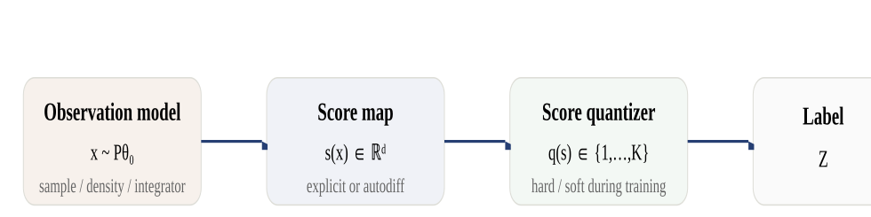
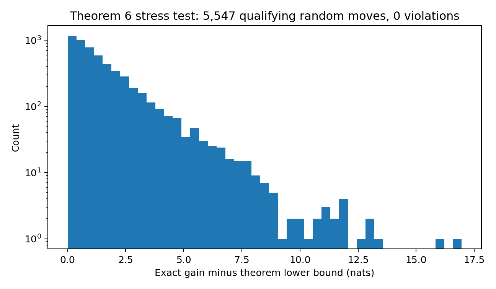
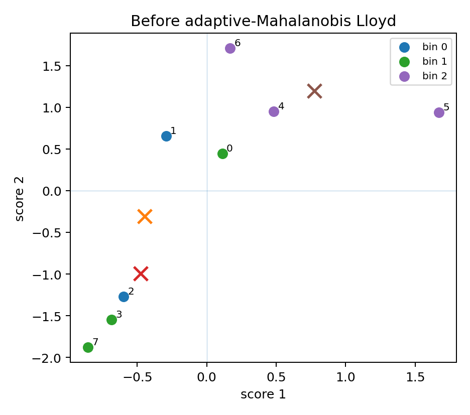
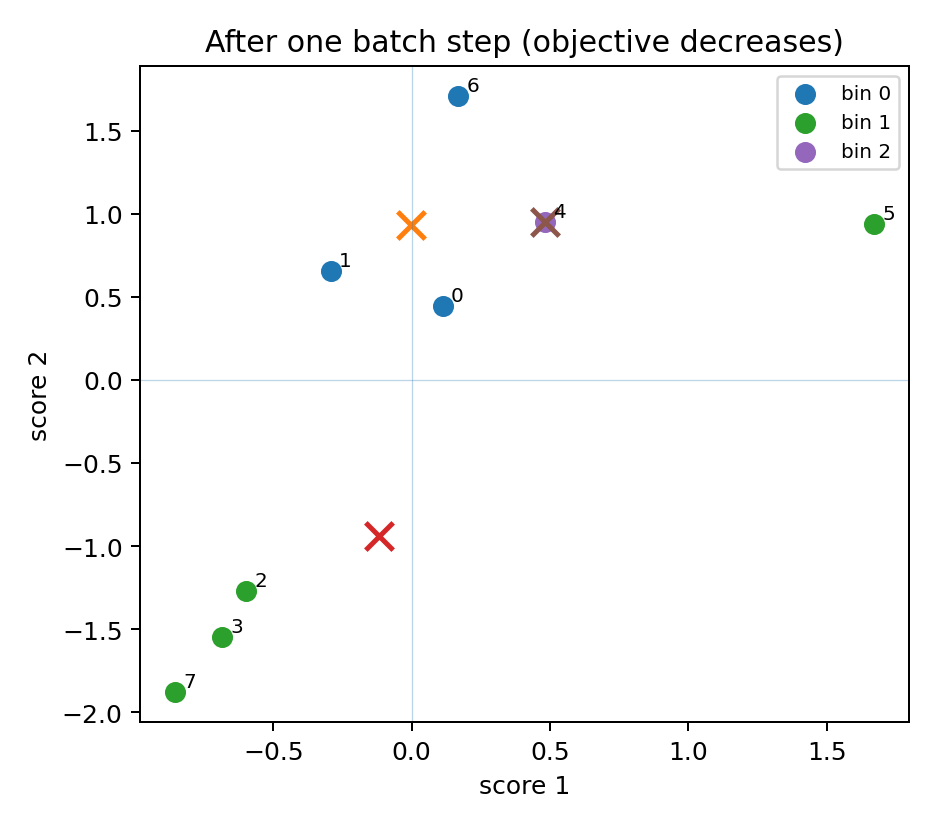
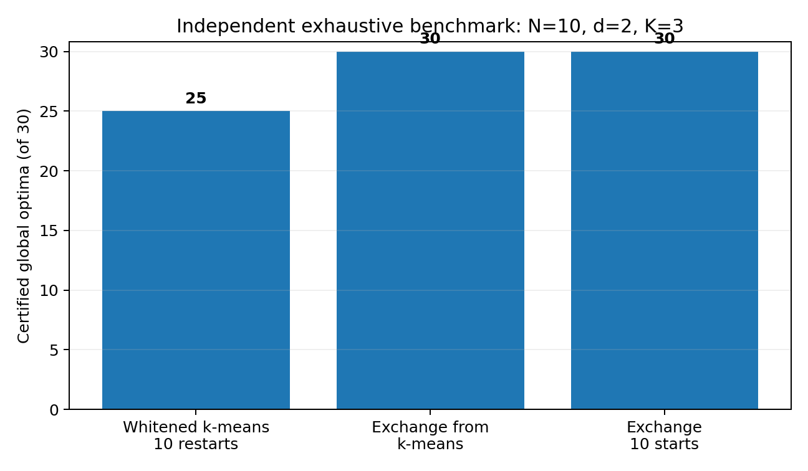
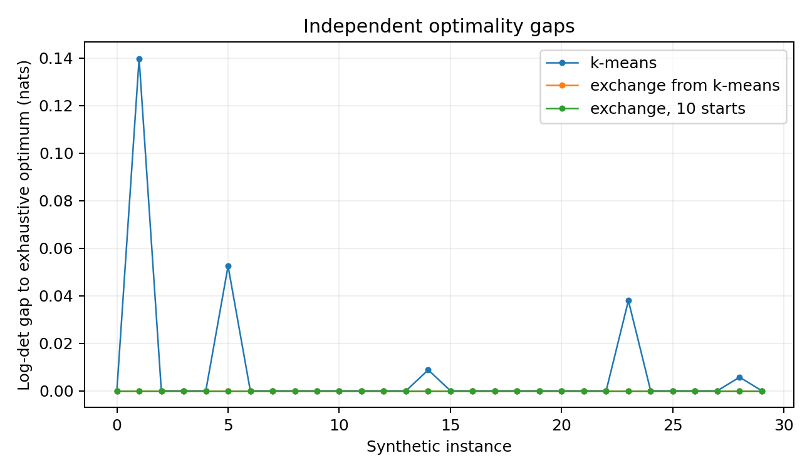

Information-optimal hard quantization of multivariate score space
Abstract
Let \(X\sim P_\theta\) be a regular parametric model and let \(S=s(X)\in\mathbb R^d\) denote the score at a reference parameter. We study compression of \(S\) into \(K\) hard labels while preserving matrix-valued Fisher information. The retained information is the between-cell score scatter, \(I_q=\operatorname{Var}(\mathbb E[S\mid q(S)])\) [1], [3], [4], [23] [novelty: known; ledger V8-01]. A central distinction is made between three problems that are often conflated: unrestricted assignment of a finite observed sample, empirical fitting of an inductive quantizer that assigns future scores, and population quantizer design under the score law [8], [12] [novelty: known; ledger V8-02]. For full D-optimality we state an exact rank-two finite relocation identity and a closed determinant gain, adapting exchange-method scatter updates [24], [25] to the between-cell information matrix [novelty: adaptation; ledger V8-09]. A leverage inequality then yields a finite theorem for which we found no direct precedent: on merged distinct score atoms, at exact zero-tolerance stability, every one-point-exchange-stable positive-definite partition into exactly \(K\) nonempty cells is already a strict self-consistent \(I_q^{-1}\)-Mahalanobis Voronoi partition [novelty: apparently new; ledger V8-11]. Thus a terminal finite D solution has a canonical extension to unseen score vectors. The corresponding implication fails for profiled \(D_s\), A, and E criteria: exhaustive finite examples show globally optimal sample assignments that violate their own first-order geometric rule [novelty: unresolved; ledger V8-25]. For \(D_s\), the first-order violation of an exchange-stable state is bounded by the moving weight times a leverage factor, which is \(O(K/N)\) under balanced sampling [novelty: unresolved; ledger V8-24]; the profiled information is bounded above, by the extremal characterization of the Schur complement [26], through D-optimal quantization of the full-data efficient score [novelty: direct corollary; ledger V8-27]; and population stationarity is nearest-cell assignment in the projected binned efficient score [16], [15] [novelty: direct corollary; ledger V8-22]. The finite-to-population question for \(D_s\) is then taken further. A conditional bridge shows that exchange-stable finite \(D_s\) labelings carrying five margins (M1)–(M5) are asymptotically geometric with population-stationary efficient-Voronoi limits. On conditionally centered laws with a scalar nuisance parameter, however, global finite optima converge to the nuisance-degenerate efficient-score interval quantizer, the conditioning margin fails along them, and the margin-certified exchange-stable branch is almost surely eventually empty; one exact off-class law admits a transfer theorem, but only through global selection. A tilt dynamic-programming dual gives a two-sided bracket on the finite profiled optimum with a set-valued saddle closure test; the bracket is not generically exact, and strong duality can fail by order one. We add A-optimality, whose exact exchange is monotone but whose D-style geometry also fails, and information-efficiency outputs that report retained information relative to the full-data matrix. For E-optimality, repeated minimum eigenvalues make one-point first-order geometry intrinsically non-identifying [15] [novelty: direct corollary; ledger V8-31]. We also formulate differentiable randomized quantizers, whose soft information matrix is the Fisher information of a \(\theta\)-independent randomized quantizer [18], [20], [3] [novelty: direct corollary; ledger V8-37], state their assignment gradient [18] [novelty: direct corollary; ledger V8-38], and clarify what gradient methods can and cannot guarantee. Finally, we show that full probability densities are not required for model access: the local score is the parameter derivative of a log density ratio, and in linear component models ratios of component densities to a single reference component suffice exactly [17], [21], [22] [novelty: known; ledger V8-05]. Analytic ratio functions, direct density-ratio estimators, and calibrated classifiers therefore form interchangeable upstream routes to score-space quantization. Estimated ratios are treated explicitly as model-access approximations: they recover the exact Fisher problem only when they recover the true local score, and the true retained information under an estimated score is \(\operatorname{Var}(\mathbb E[s\mid q(\hat s)])\) [17], [27], [28] [novelty: known; ledger V8-06].
1. Introduction
Many statistical pipelines ultimately replace a high-dimensional observation by a small categorical symbol: a histogram bin, event category, transmitted codeword, or discrete decision state. At a fixed reference parameter, local inferential content is summarized by the score. This motivates a direct design problem: partition multivariate score space into a small number of cells so that the resulting discrete label retains as much Fisher information as possible.
The problem is related to score-function quantization in distributed estimation [1], the geometric representation of Fisher information after quantization [3], sufficient-statistic quantization [4], determinant clustering [5], [6], vector quantization, and inference-aware learned categorization [17], [18], [19], [20]. Yet the matrix criterion changes the optimization structure. Fisher-normalized trace reduces after whitening to weighted \(k\)-means [1], [29], [3], [4] [novelty: known; ledger V8-03], whereas D-optimality depends on the determinant of the entire retained information matrix and therefore couples all directions through a partition-dependent metric.
A second issue is equally important and more practical. Optimizing labels for the observations already present in memory is not the same task as learning a function that can assign the next observation. A finite labeling underdetermines its extension outside the observed score vectors. Conversely, a deployable quantizer is a function on score space and is therefore a statistical estimator learned from finite data. The distinction is immaterial for some classical quantizers because their optimization is posed directly over centers or boundaries; it becomes explicit when exact label-exchange methods are introduced. The distinction between empirical and population objects follows Pollard [12], and that between terminal exchange states and Voronoi partitions follows Telgarsky and Vattani [8] [novelty: known; ledger V8-02].
This manuscript treats finite assignment optimization and score-space quantizer design as two legitimate but different computational tasks. For D-optimality a finite exchange theorem connects them: every terminal exchange-stable state on merged score atoms, at exact zero tolerance, admits a canonical self-consistent Mahalanobis predictor. For profiled \(D_s\), A, and E, no such exact finite bridge exists in general, so a sample optimum and an inductive geometric optimum must remain distinct objects. For \(D_s\) the two are reconnected only conditionally, through margins that are priced rather than free (§7–§9).
Contributions. The manuscript establishes the following, each at the strength recorded in the project's claim registry and no more. (i) An exact rank-two relocation identity and closed determinant gain for finite D exchange, adapted from exchange-method scatter updates to the between-cell information matrix (§5.1). (ii) Theorem 3: on merged distinct score atoms with exactly \(K\) nonempty cells and exact zero-tolerance stability, one-point exchange stability forces strict self-consistent \(I^{-1}\)-Voronoi geometry; the converse fails, and split duplicate atoms are a genuine boundary (§5.2). We found no direct precedent; the nearest prior art is the Hartigan-versus-Lloyd analysis for squared error [8], which reaches the opposite conclusion for its criterion. (iii) For profiled \(D_s\): the efficient-score semimetric, an exact profiled move oracle, a leverage-type bound on first-order violations at exchange-stable states, an exact-rational global optimum that is non-geometric, and the efficient-score domination bound (§6). (iv) A conditional finite-to-population \(D_s\) bridge: exchange-stable finite labelings carrying the margins (M1)–(M5) are asymptotically geometric and their limits are population-stationary efficient-Voronoi quantizers (§7). (v) On conditionally centered laws with a scalar nuisance parameter, global finite \(D_s\) optima converge to the nuisance-degenerate efficient-score interval quantizer, the conditioning margin fails along them, margins are priced by a definite information cost, and the margin-certified exchange-stable branch is almost surely eventually empty on that class; one exact off-class law admits a transfer theorem, but only through global selection (§8). (vi) A tilt dynamic-programming dual bracket for the scalar-interest profiled problem with a set-valued saddle closure test; the bracket is two-sided but not generically exact, strong duality can fail by order one, and the multivariate outer problem need not be quasiconvex (§9). (vii) A-optimality: an exact move oracle and monotone exchange, with the D-style geometric implication refuted by an exact witness (§11). (viii) E-optimality: supergradient structure, the automatic first-order stability at repeated minimum eigenvalues, and a finite counterexample (§10). (ix) Information-efficiency outputs relative to the full-data matrix (§14.1). (x) A model-access principle: density ratios, not densities, are the required upstream object (§3.5–§3.6). Profiled compilation is routed through the projected efficient-score rule; the margin-certified profiled path is priced and certificate-gated, never assumed.
2. Related work and positioning
2.1 Fisher-information quantization
Score-function quantizers were studied explicitly for distributed parameter estimation by Venkitasubramaniam, Tong, and Swami [1], [29]. Farias and Brossier analyzed Fisher-information-optimal scalar quantization for parameter estimation [2]. Barnes, Han, and Özgür showed that the Fisher information of a quantized observation can be expressed geometrically through conditional score means and developed trace bounds for multivariate models [3]. Dülek proved convex-polytopal sufficient-statistic quantizers for trace Fisher information in exponential families [4]. Zhang, Blum, Kaplan, and Lu established the alphabet-size obstruction on the rank of quantized Fisher information [30]. Valassi's weight-derivative regression states the scalar retained-information ratio in the high-energy-physics setting [23]. These results establish the score representation and much of the trace geometry; the present focus is the nonlinear full-matrix criteria and exact finite relocation structure.
2.2 Determinant clustering, exchange methods, and Voronoi structure
Determinant-based clustering criteria date at least to Friedman and Rubin [5] and Scott and Symons [6]. That literature primarily concerns determinants of within-cluster scatter or likelihood-ratio variants. In dimensions above one, minimizing \(\det W\) is not equivalent to maximizing \(\det B\) even when \(T=W+B\) is fixed. Exact point-relocation methods have a long history in clustering, notably Hartigan-type local search [7] and Späth's exchange method with its scatter-update machinery [24], [25]; Telgarsky and Vattani analyzed the relation between Hartigan and Lloyd fixed points for \(k\)-means [8]. Inaba, Katoh, and Imai used Voronoi realizability and arrangement enumeration to obtain fixed-parameter exact clustering algorithms [9]. The finite D theorem below has a similar logical flavor but uses a determinant-specific leverage identity.
2.3 Population quantization and consistency
Centroidal Voronoi tessellations provide the classical population picture for squared-error vector quantization and a mature theory of Lloyd-type algorithms [13], [14]. Pollard's strong consistency theorem for \(k\)-means is the canonical empirical-to-population template [12]. Two camps of antecedents matter for the finite-to-population results of §7–§9. On the distortion side, Kieffer [31] and Mease and Nair [32] give uniqueness of locally optimal scalar quantizers for log-concave laws, Graf and Luschgy [33] give existence and stationarity of optimal quantizers, and Levrard [34] uses a margin condition as a hypothesis, where the present work finds a margin failing at global optima. On the determinant side, Silvey [35] treats singular \(D_s\) designs and Wang, Yang, and Stufken [36] select subdata by an information criterion; both are frames for the design-side reading, not sources of the results. These works are important comparators for the inductive problem, but their objective is additive squared distortion or a design measure rather than a hard-partition matrix information criterion. The general equivalence theory of optimal experimental design provides the relevant convex-analytic language for D, \(D_s\), A, and E criteria, including nondifferentiable E-optimality [15] and classical \(D_s\) equivalence results [16], [37], [38], [39].
2.4 Density-ratio estimation, learned scores, and differentiable categorization
Density-ratio estimation is a mature alternative to separate density estimation. Direct methods estimate \(p_1(x)/p_0(x)\) from samples without constructing either density, including KLIEP- and least-squares-based approaches summarized by Sugiyama, Suzuki, and Kanamori [22]. Probabilistic classification provides another route: calibrated posterior odds recover the same density ratio up to known class-prior odds [21]. Local score estimation follows by differentiating or finite-differencing such ratios; score-based local likelihood-free inference develops this idea further [17]. Nuisance-hardened score compression [27] and information-maximizing neural summaries [28] are the continuous-summary precedents for the estimated-score reading adopted here.
This literature implies an important model-access principle for the present problem: a score-space quantizer does not need full component PDFs when the required local density ratios are available. A classifier is one estimator of those ratios, not a privileged part of the quantization method.
Modern inference-aware methods also learn summaries or categories by differentiating through an inference objective. Examples include INFERNO [18], iterative event categorization [19], and recent differentiable multidimensional bin optimization [20]. Neither density-ratio estimation nor differentiable binning is claimed as a contribution here. The contribution is the information-quantization problem and its exact finite and population structure once an exact or estimated score representation has been supplied.
3. Statistical formulation
3.1 Observation space, score space, and the push-forward law
Let \((\mathcal X,\mathcal A)\) be the observation space and let \(P_\theta\) be a regular parametric model with \(\theta\in\mathbb R^d\). At a fixed reference point \(\theta_0\), define \[ S=s(X)=\nabla_\theta\log p(X\mid\theta)\big|_{\theta_0},\qquad \mathbb E[S]=0,\qquad I_\mathrm{full}=\mathbb E[SS^\top]\succ0. \] The decision rule considered here is a hard quantizer of score space, \[ q:\mathbb R^d\to\{1,\ldots,K\},\qquad Z=q(S), \] and the corresponding observation-space compressor is simply \(Q(x)=q(s(x))\). Therefore two observations with the same score receive the same label. The optimization depends on the original statistical model only through the push-forward score law \[ P_S=s_\#P_{\theta_0}. \] This is important computationally: the score law may be represented by a finite table, generated from an observation-space simulator, sampled directly in score space, or integrated analytically.

3.2 Fisher information retained by a hard label
For cell \(b\), define
\[
W_b=P(q(S)=b),\qquad m_b=\mathbb E[S\,1_{\{q(S)=b\}}],\qquad \mu_b=\frac{m_b}{W_b}.
\]
The score of the discrete label equals its conditional mean score [3], hence
\[
\boxed{I_q=\sum_{b=1}^K W_b\mu_b\mu_b^\top=\sum_{b=1}^K\frac{m_bm_b^\top}{W_b}=\operatorname{Var}(\mathbb E[S\mid Z]).}
\tag{3.1}
\]
The law of total covariance gives
\[
I_\mathrm{full}=I_q+\mathbb E[\operatorname{Cov}(S\mid Z)],\qquad I_q\preceq I_\mathrm{full}.
\tag{3.2}
\]
Thus all criteria in this paper depend on a quantizer only through the finite collection of cell probabilities and score first moments \((W_b,m_b)\). Identity (3.1) is the score-function quantization identity of Venkitasubramaniam, Tong, and Swami [1], in the geometric form of Barnes, Han, and Özgür [3] and Dülek [4]; its scalar retained-information form appears in Valassi [23] [novelty: known; ledger V8-01] (FI-QUANT-IDENTITY, FI-LOSS-DECOMPOSITION). The efficiency outputs of §14.1 normalize (3.2) by \(I_\mathrm{full}\).
3.3 Three optimization problems
| Problem | Object optimized | Semantics of the result |
|---|---|---|
| A. Population quantizer design | A measurable \(q\) under \(P_S\): \(\sup_q F(I_P(q))\). | Inherently a rule for future scores. |
| B. Empirical inductive fitting | \(q_\eta\) in an explicit function class \(\mathcal Q\), maximizing \(F(I_{P_n}(q_\eta))\). | Carries a prediction rule and can be validated on new samples. |
| C. Finite assignment optimization | Arbitrary labels \(z_1,\ldots,z_N\) of a given weighted score table. | A transductive partition; it does not specify a unique extension away from the observed rows. |
These problems need not have the same finite optimum. Problem C is a legitimate objective in its own right—for example when the final dataset is fixed and only its categorization matters. Problem B is the natural formulation when the learned object will be applied to future events. A theorem can sometimes connect them; D-optimality will provide exactly such a bridge, and for profiled \(D_s\) a conditional bridge is given in §7. The three-level distinction is a framing borrowed from the empirical-versus-population analysis of Pollard [12] and the terminal-versus-Voronoi analysis of Telgarsky and Vattani [8]; it is not a theorem [novelty: known; ledger V8-02].
3.4 Computational access to the score law
| Available input | What can be computed | Natural use |
|---|---|---|
| Weighted scores \((s_i,w_i)\) | Empirical \(W_b,m_b,I_q\) | Finite assignment and empirical inductive fitting |
Observations \((x_i,w_i)\) + exact/autodiff score(x) |
Scores are evaluated once, then the same empirical problems | Model-aware datasets with evaluable local likelihood derivatives |
| Density-ratio oracle \(r(x;\theta,\theta_0)\) + reference source | Exact or estimated local score without evaluating either density separately | Analytic ratios, simulator-based inference, learned ratio models |
| Component density ratios \(\phi_\alpha/\phi_{\rm ref}\) + reference coefficients | Exact mixture/intensity score coordinates | Template/component models where only relative shapes are available |
| Samples + direct density-ratio estimator | Estimated ratios, then estimated score coordinates | High-dimensional models where separate density estimation is undesirable |
| Observations or simulator + classifier ratio estimator | Estimated likelihood/component ratios and score table | Implicit models, detector-level simulation, data/MC components |
| Sampler \(X\sim P_{\theta_0}\) + score/ratio provider | Monte-Carlo estimates of population moments, stochastic gradients | Simulation-based population quantizer learning |
| Proposal sampler \(X\sim G\) + importance ratio \(dP_{\theta_0}/dG\) | Reference expectations by weighted Monte Carlo | Reuse of off-reference or component-wise samples |
| Direct score sampler \(S\sim P_S\) | Same as above without materializing observation space | Models whose score law is directly available |
| Density/integrator + score map | Quadrature or analytic cell moments; potentially deterministic population objective | Low-dimensional analytic models |
| Moment oracle for a proposed quantizer | Returns \(W_b,m_b\) directly, optionally derivatives | Specialized analytic backends |
Knowing \(s(x)\), or enough density ratios to construct it, is sufficient to apply an already learned score-space quantizer. Population optimization additionally requires the reference measure \(P_{\theta_0}\), a sample from it, importance weights relative to a proposal measure, or an equivalent integration oracle.
3.5 Density ratios are sufficient for the local score
The full likelihood is more information than this framework needs. Fix a reference parameter \(\theta_0\) and define \[ r(x;\theta,\theta_0)=\frac{p(x\mid\theta)}{p(x\mid\theta_0)}. \] Because the denominator is independent of \(\theta\), \[ \boxed{s(x)=\nabla_\theta\log p(x\mid\theta)\big|_{\theta_0} =\nabla_\theta\log r(x;\theta,\theta_0)\big|_{\theta_0}.} \] Thus an exact local family of density ratios is an exact score oracle. Neither density needs to be available separately. For coordinate \(j\), one may use a central derivative of the log ratio, or directly estimate the ratio between the two nearby hypotheses \(\theta_0\pm\delta e_j\). This makes density-ratio estimation, rather than density estimation, the natural upstream inference problem. Direct ratio methods explicitly exploit this asymmetry: estimating \(p/q\) from samples can be preferable to estimating \(p\) and \(q\) independently and dividing the estimates [22].
The statement is especially strong for the linear component model
\[
\lambda(x;\theta)=\sum_{\alpha=1}^d\theta_\alpha\phi_\alpha(x).
\]
Choose a reference component \(0\) and define only
\[
r_\alpha(x)=\frac{\phi_\alpha(x)}{\phi_0(x)},\qquad r_0(x)=1.
\]
For the eventwise extended-intensity score,
\[
\boxed{s_\alpha(x)=\frac{\phi_\alpha(x)}{\lambda(x;\theta_0)}
=\frac{r_\alpha(x)}{\sum_\beta\theta_{0\beta}r_\beta(x)}.}
\]
The unknown common factor \(\phi_0(x)\) cancels exactly. Hence a programmatic PDF for every component is unnecessary: ratios to one reference component, or any connected set of pairwise component ratios, are sufficient. Normalized mixtures require the usual normalization or constrained-weight correction, but this correction also depends only on ratios plus known component normalizations. These are bridges over published identities: the local score as the derivative of a log likelihood ratio is the basis of score-based likelihood-free inference [17], the classifier route is the calibrated-classifier likelihood-ratio trick [21], and direct ratio estimation is surveyed in [22] [novelty: known; ledger V8-05] (RATIO-LOCAL-SCORE, MIXTURE-RATIO-SCORE).
The cancellation is a statement about numerical density ratios, not arbitrary monotone discriminants. A ranking-only classifier output is generally insufficient for Fisher-optimal quantization. The output must be calibrated to posterior odds / likelihood ratios, or replaced by a direct ratio estimator.
3.6 Estimating density ratios: classifiers and direct methods
A probabilistic classifier is one convenient density-ratio estimator, but not the only one. If \(D(x)\) distinguishes samples from \(p_1\) and \(p_0\) with training priors \(\pi_1,\pi_0\), then at the Bayes optimum \[ \frac{p_1(x)}{p_0(x)}=\frac{D(x)}{1-D(x)}\frac{\pi_0}{\pi_1}. \] This is the likelihood-ratio trick used in likelihood-free inference [21]. For nearby hypotheses, \[ \boxed{\hat s_j(x)=\frac{1}{2\delta_j} \left[\operatorname{logit}D_j(x)-\log\frac{\pi_1}{\pi_0}\right],} \] with central finite-difference bias \(O(\delta_j^2)\) before ratio-estimation error.
For a multiclass component classifier with posterior probabilities \(\eta_\alpha(x)=P(C=\alpha\mid x)\) and training priors \(\pi_\alpha\), Bayes' rule gives \[ \frac{\phi_\alpha(x)}{\phi_\beta(x)}= \frac{\eta_\alpha(x)/\pi_\alpha}{\eta_\beta(x)/\pi_\beta}. \] Combining this with the mixture-score formula avoids reconstructing any component density: \[ \boxed{s_\alpha(x)= \frac{\eta_\alpha(x)/\pi_\alpha} {\sum_\beta\theta_{0\beta}\,\eta_\beta(x)/\pi_\beta}.} \] When \(\pi_\alpha\propto\theta_{0\alpha}\), this simplifies to \(s_\alpha(x)=\eta_\alpha(x)/\theta_{0\alpha}\) for the extended-intensity parameterization. This is the direct mathematical basis of the component-classifier workflow. Calibration error of the classifier is not propagated to the Fisher loss in this manuscript; that propagation is an open problem (§16.4).
Classifier odds are only one backend. Direct density-ratio estimators such as KLIEP or uLSIF fit \(p_1/p_0\) from samples without estimating either density separately [22]. Analytic ratio callbacks, parameterized neural ratio estimators trained elsewhere, and pairwise component-ratio functions are equally valid inputs. The software should expose one ratio-provider abstraction and convert ratios to score coordinates through model-specific algebra.
The Fisher identity in Eq. (3.1) is exact for the true score \(s\). If estimated ratios produce \(\hat s\neq s\), then \(\operatorname{Var}(\mathbb E[\hat s\mid q(\hat s)])\) is a surrogate objective; the true retained Fisher information is \(\operatorname{Var}(\mathbb E[s\mid q(\hat s)])\), and score-estimation error separates from quantization error. This is the estimated-summary reading of Brehmer et al. [17], Alsing and Wandelt [27], and Charnock, Lavaux, and Wandelt [28] [novelty: known; ledger V8-06] (PROXY-TRUE-RETAINED-FI, REPRESENTATION-QUANTIZATION-LOSS). Ratio-estimator provenance, class priors, calibration/direct-ratio validation, and held-out or cross-fitted evaluation should therefore be retained. Quantitative propagation of score error to retained information is open (§16.4).
Density ratios have a second, independent role. If population moments are evaluated from a proposal law \(G\neq P_{\theta_0}\), reference expectations can be obtained with importance weights \(dP_{\theta_0}/dG\). Again the absolute reference density is unnecessary; only its ratio to the sampling law is required.
3.7 Rank, refinement, and invariance
Since \(\sum_bm_b=0\), \(\operatorname{rank}I_q\le\min(d,K-1)\). Consequently \(K\ge d+1\) is necessary for a finite unregularized full D criterion. Refining a partition increases \(I_q\) in Loewner order because conditioning on a finer sigma-algebra increases between-cell variance. Under an invertible reparameterization of \(\theta\), D-optimal partitions are invariant because \(\log\det I_q\) changes only by a quantizer-independent additive constant. The rank ceiling is the alphabet-size obstruction of Zhang, Blum, Kaplan, and Lu [30]; refinement monotonicity and D reparameterization invariance are standard [novelty: known; ledger V8-04] (FI-RANK-CEILING, FI-REFINEMENT-MONOTONICITY, D-REPARAM-INVARIANCE).
4. First variation and common geometric stationarity
Consider moving infinitesimal probability mass \(d\varepsilon\) at score \(s\) from cell \(a\) to cell \(b\). Differentiating the cell moment expression gives
\[
dI_q=\left[(s-\mu_a)(s-\mu_a)^\top-(s-\mu_b)(s-\mu_b)^\top\right]d\varepsilon.
\tag{4.1}
\]
For a differentiable criterion \(F(I)\) with symmetric gradient \(G=\nabla_I F(I)\),
\[
\boxed{\frac{dF}{d\varepsilon}=(s-\mu_a)^\top G(s-\mu_a)-(s-\mu_b)^\top G(s-\mu_b).}
\tag{4.2}
\]
Therefore any regular atomless population local optimum must satisfy the nearest-cell rule
\[
q(s)\in\arg\min_b (s-\mu_b)^\top G(s-\mu_b)\qquad P_S\text{-a.e.}
\tag{4.3}
\]
provided the criterion is differentiable at \(I_q\) and boundary ties have zero probability. Identities (4.1)–(4.3) are the Gateaux derivative of (3.1); they are the first variation of centroidal Voronoi energies [13] combined with the directional derivatives of design criteria [15] [novelty: direct corollary; ledger V8-07] (GENERAL-FIRST-VARIATION).
If the same symmetric matrix \(G\) is used for all cells, pairwise comparisons cancel the common term \(s^\top Gs\). Thus every cell is an intersection of affine halfspaces. For \(G\succeq0\) the rule is a Mahalanobis Voronoi diagram, possibly cylindrical when \(G\) is singular. Equivalently it is an affine-max classifier \(q(s)=\arg\max_b(a_b^\top s+c_b)\). [novelty: adaptation; ledger V8-08]
Proposition 1 transfers the Lloyd/CVT necessary condition [13] to a partition-dependent Mahalanobis metric; polyhedral cells for trace-type Fisher criteria are already in Barnes, Han, and Özgür [3] and Dülek [4]. It is a stationarity condition only, not an optimality statement. Equation (4.3) is a population first-order condition. It is not a convergence theorem and does not imply that a finite hard empirical objective is smooth in geometric parameters. Those distinctions become important below.
5. D-optimality
For
\[
F_D(I)=\log\det I,\qquad G_D=I^{-1},
\tag{5.1}
\]
regular population stationary quantizers are self-consistent Mahalanobis Voronoi partitions:
\[
q(s)=\arg\min_b(s-\mu_b)^\top I_q^{-1}(s-\mu_b).
\tag{5.2}
\]
The metric is itself determined by the resulting partition. This is the D specialization of Proposition 1 [13], [3], [4] [novelty: adaptation; ledger V8-08] (D-POP-VORONOI); it states stationarity, not optimality.
5.1 Exact finite relocation
For a weighted empirical score table, move a point \((s,w)\) from a non-singleton source cell \(a\) to destination \(b\). Let
\[
u_a=s-\mu_a,\quad u_b=s-\mu_b,\quad
\alpha=\frac{wW_a}{W_a-w},\quad
\beta=\frac{wW_b}{W_b+w}.
\tag{5.3}
\]
The exact change of retained information collapses to one positive and one negative rank-one update,
\[
\boxed{\Delta I=\alpha u_au_a^\top-\beta u_bu_b^\top.}
\tag{5.4}
\]
With \(H=I^{-1}\) and \(q_{aa}=u_a^\top Hu_a\), \(q_{bb}=u_b^\top Hu_b\), \(q_{ab}=u_a^\top Hu_b\), the determinant lemma gives
\[
\boxed{\Delta F_D=\log\!\left[(1+\alpha q_{aa})(1-\beta q_{bb})+\alpha\beta q_{ab}^2\right].}
\tag{5.5}
\]
The candidate move therefore requires only three inverse-metric inner products once the current factorization is available. Identities (5.4)–(5.5) adapt the exchange-method scatter updates of Späth [24], [25], in the determinant-clustering tradition of Friedman and Rubin [5] and Scott and Symons [6], from within-cluster scatter to the between-cell information matrix with centroid-coupled \(\alpha,\beta\); the determinant step is the matrix determinant lemma [novelty: adaptation; ledger V8-09] (D-RANK2-MOVE, D-LOGDET-GAIN).
5.2 Exchange stability implies a deployable D quantizer
For a nonsingular partition, \[ (\mu_a-\mu_b)^\top I^{-1}(\mu_a-\mu_b)\le \frac1{W_a}+\frac1{W_b}. \tag{5.6} \] It follows from the projection matrix associated with \([\sqrt{W_1}\mu_1,\ldots,\sqrt{W_K}\mu_K]\). This is the standard hat-matrix/projection leverage inequality applied to the columns \(\sqrt{W_b}\mu_b\); its role here is to bridge infinitesimal D geometry to exact finite gains. [novelty: known; ledger V8-10]
Let \(s_1,\ldots,s_N\in\mathbb R^d\) be the distinct score atoms obtained after merging coincident score rows, with strictly positive weights \(w_i>0\), partitioned into exactly \(K\) nonempty cells. Assume \(I\succ0\). Let the only constraint on a one-atom relocation be that its source cell remain nonempty, and let exchange stability mean that no admissible relocation has strictly positive exact \(\log\det I\) gain, with zero gain tolerance. For an admissible move \(a\to b\) between distinct centroids, if the atom is no closer to its own centroid than to \(b\) in the current D metric, \[ q_{aa}\ge q_{bb}, \] then \[ \Delta F_D\ge \log\!\left(1+\frac{\alpha\beta}4q_\delta^2\right)>0, \qquad q_\delta=(\mu_a-\mu_b)^\top I^{-1}(\mu_a-\mu_b). \tag{5.7} \] Distinct centroids are a consequence of stability, not an additional hypothesis: if \(\mu_a=\mu_b\) and either cell is non-singleton, moving a non-centroid atom between them has determinant ratio \(1+(\alpha-\beta)q_{aa}>1\); if both are singletons, equal centroids would mean duplicate atoms, excluded by merging. A singleton atom is then strictly nearest to its own centroid. Hence every one-point-exchange-stable finite D partition under these hypotheses is a strict self-consistent \(I^{-1}\)-Mahalanobis Voronoi partition on the merged atoms, \[ (s_i-\mu_{z_i})^\top I^{-1}(s_i-\mu_{z_i})<(s_i-\mu_b)^\top I^{-1}(s_i-\mu_b)\qquad\text{for every }i\text{ and every }b\ne z_i . \] [novelty: apparently new; ledger V8-11]
Proof sketch. With \(\det(I+\Delta I)/\det I=1+E\), the exact algebra of (5.5) together with (5.6) gives \(E\ge\frac{\alpha\beta}{4}[q_\delta^2+(q_{aa}-q_{bb})^2]\) whenever \(q_{aa}\ge q_{bb}\); the identity \((\alpha-\beta)/(\alpha\beta)=1/W_a+1/W_b\) is what lets the leverage bound meet the determinant gain exactly. The full proof, including the treatment of ties, singletons, and duplicates, is the audited registry statement D-EXCHANGE-IMPLIES-VORONOI (D-EXCHANGE-VIOLATION-LOWER-BOUND). We found no direct precedent; the nearest prior art is the Hartigan-versus-Lloyd analysis of Telgarsky and Vattani [8], which for squared error reaches the opposite conclusion, together with the exchange traditions of Hartigan [7], Späth [24], and Friedman and Rubin [5].
The merged-atom hypothesis cannot be dropped. Take scalar scores \((1,1,-1)\) with weights \((1/4,1/4,1/2)\) and put each row in one of \(K=3\) singleton cells. Then \(I_q=1\), all cells are nonempty, and no nonempty-preserving relocation exists, so the labeling is vacuously exchange-stable; yet the first two centroids coincide, strict assignment fails, and no deterministic score-only rule can reproduce the split labels. This is the exact-rational fixture CE-D-UNMERGED-DUPLICATES-001 (D-UNMERGED-DUPLICATES-FAIL). The resolution is to merge coincident score atoms before optimization, or to require labels to be constant on each duplicate class, after which the theorem forces distinct centroids and strict assignment. [novelty: unresolved; ledger V8-12]
Self-consistent nearest-centroid assignment under the current D metric is strictly weaker than one-point exact exchange stability. An exact \(N=4\), \(d=1\), \(K=2\) witness is a D-Voronoi fixed point whose \(\det I\) rises from \(25/48\) to \(9/16\) under one admissible relocation (CE-D-VORONOI-CONVERSE-001, D-VORONOI-NOT-EXCHANGE); in a random suite, 35 of 100 Lloyd/Voronoi fixed points still admitted an exact improving one-point move. This is the analogue, for the determinant criterion, of Lloyd fixed points that are not Hartigan-stable in squared-error clustering [8]. The chain is therefore strict: global finite optimum \(\Rightarrow\) exchange-stable \(\Rightarrow\) strict D-Voronoi, with neither arrow reversible. [novelty: unresolved; ledger V8-13]
The theorem closes the finite-assignment/quantizer gap for D in a strong sense. An exchange solver may pass through arbitrary labelings, but once it reaches exact one-point stability the final state has the canonical inductive extension
\[
\widehat q_D(s)=\arg\min_b(s-\mu_b)^\top \widehat I^{-1}(s-\mu_b),
\tag{5.8}
\]
which reproduces every merged-atom training label strictly, without a tie breaker; original duplicate rows inherit the label of their merged atom. A numerical solver that stops at a positive gain tolerance \(\varepsilon>0\) has only the weaker, tolerance-stamped guarantee that no geometric disagreement has exact gain exceeding \(\varepsilon\); strict label reproduction need not hold [novelty: direct corollary; ledger V8-14] (D-FINITE-INDUCTIVE-CLOSURE). Every positive-definite global finite D optimum on merged atoms is exchange-stable and therefore geometrically realizable in the canonical form (5.8); consequently unrestricted finite D assignment and optimization over realizable affine-max/D-Voronoi labelings have the same optimum value. This does not say that every D-Voronoi fixed point is globally optimal [novelty: direct corollary; ledger V8-15] (D-GLOBAL-GEOMETRIC-REALIZABILITY). Nor does it imply population optimality or statistical consistency; it only proves that finite D optimization does not destroy the natural score-space geometry.

5.3 Exact exchange, Lloyd proposals, and global search
Accepting only moves with positive exact gain yields a strictly monotone finite algorithm. Since there are finitely many labelings, it terminates at a one-point exchange-stable state, which by Theorem 3 compiles to (5.8). This is strict ascent on a finite labeling set, as in Späth's exchange method [24], Hartigan's local search [7], and the monotone finite-design algorithms of Silvey, Titterington, and Torsney [40] [novelty: direct corollary; ledger V8-16] (D-EXCHANGE-TERMINATES). The tempting batch iteration that freezes \(I^{-1}\), reassigns all points to nearest current centroids, and recomputes \(I\) is not monotone: the tangent inequality for concave \(\log\det\) is an upper bound, not a minorizer. A batch proposal should therefore be guarded by exact objective evaluation. The non-monotonicity is presented as a witness, not as a novelty; adaptive-metric Lloyd steps have not been prior-art searched, and the squared-error analogue is the Lloyd-versus-Hartigan comparison of [8] [novelty: unresolved; ledger V8-17] (D-LLOYD-NONMONOTONE, D-GUARDED-LLOYD).


The finite geometry also restricts global optima to affine-max labelings. For fixed \((d,K)\), arrangement enumeration therefore gives an \(N^{O(Kd)}\) exact algorithm, an application of the fixed-parameter Voronoi-enumeration template of Inaba, Katoh, and Imai [9] to the D criterion; it is XP, not known to be FPT, and the parameterized complexity remains open (§16.4) [novelty: adaptation; ledger V8-19] (D-GLOBAL-XP). A practical branch-and-bound upper bound follows from refinement monotonicity: treating every unassigned point as a singleton produces an information matrix that Loewner-dominates every completion, so \(\log\det\) of the partial-plus-singleton matrix bounds every completion; the same bound serves any Loewner-monotone criterion, E included (E-BB-APPLIES) [novelty: direct corollary; ledger V8-20] (D-BB-SINGLETON-BOUND).


6. Profiled \(D_s\)-optimality
Partition the parameter as \(\theta=(\psi,\lambda)\), with \(\psi\in\mathbb R^{d_\psi}\) of interest and \(\lambda\) nuisance. Write
\[
I=\begin{pmatrix}A&B\\B^\top&C\end{pmatrix},\qquad
S_\psi(I)=A-BC^{-1}B^\top,
\]
and optimize
\[
F_s(I)=\log\det S_\psi(I)=\log\det I-\log\det C.
\tag{6.1}
\]
This is the profiled information when both interest and nuisance parameters are estimated from the same binned label. The Schur-complement form (6.1) is the classical \(D_s\) criterion of optimal design [37], [38], [41], [39], [16], [15], and its nuisance-hardened statistical reading is that of Alsing and Wandelt [27] [novelty: known; ledger V8-21] (DS-SCHUR, DS-CLASSICAL-DESIGN-THEORY). The design-theoretic feasible set of probability measures differs from the hard-partition feasible set considered here, so the equivalence theorems of that literature do not transfer directly.
6.1 Efficient-score semimetric
The matrix gradient is
\[
G_s=I^{-1}-E_\lambda C^{-1}E_\lambda^\top
=L^\top S_\psi(I)^{-1}L\succeq0,
\qquad L=[I_{d_\psi},-BC^{-1}],
\tag{6.2}
\]
with rank \(d_\psi\). Thus a regular population stationary quantizer is Voronoi in the projected binned efficient score
\[
e_q(s)=s_\psi-BC^{-1}s_\lambda.
\tag{6.3}
\]
Its cells are cylindrical along the nuisance directions annihilated by \(L\). This is a necessary population stationarity condition under the same regularity assumptions as Proposition 1. The gradient (6.2) is the Schur-complement derivative, the same matrix as the \(D_s\) sensitivity function of Näther and Reinsch [16] and Pukelsheim [15], combined with (4.2) [novelty: direct corollary; ledger V8-22] (DS-GRADIENT-EFFICIENT-SEMIMETRIC). Section 7 sharpens this in three respects: population stationarity is characterized exactly, as almost-everywhere nearest projected centroid in the \(S_\psi(I_q)^{-1}\) metric; a stationary population partition need not separate its projected centroids, so stationarity alone does not yield a deployable rule (CE-DS-POP-WASTED-CELLS-001); and a variational form of (6.1) extends the objective to singular nuisance blocks.
6.2 Finite exchange remains exact, but the D bridge fails
The rank-two update (5.4) remains valid for any criterion. For \(D_s\), the exact finite gain is the difference between two determinant-lemma gains, one for the full information matrix and one for the nuisance block,
\[
\Delta F_s=\Delta\log\det I-\Delta\log\det I_{\lambda\lambda},
\]
each evaluable by low-rank determinant algebra provided both blocks remain nonsingular before and after the move [novelty: direct corollary; ledger V8-23] (DS-EXACT-MOVE-ORACLE). Positive-gain exchange is therefore still strictly monotone and terminates finitely on the finite labeling set, exactly as for D [24], [7], [40] [novelty: direct corollary; ledger V8-16] (DS-EXCHANGE-TERMINATES); the feasibility convention is load-bearing, and throughout we use the in-bin convention in which a relocation is admissible only if its source cell stays nonempty and its destination keeps a nonsingular binned nuisance block (DS-PROJECTED-K-REQUIREMENT; see §8.3 for a witness that the pseudo-inverse and in-bin conventions differ). What fails is the D-specific implication from a first-order geometric violation to a positive finite gain: the nuisance determinant can improve enough to offset the full determinant in a way invisible to the efficient semimetric.
At a one-point-exchange-stable \(D_s\) partition with nonsingular blocks, let \(s_{aa}=u_a^\top G_su_a\), \(s_{bb}=u_b^\top G_su_b\), and \(q_{aa}=u_a^\top I^{-1}u_a\). For any admissible move of a point of weight \(w_i\), \[ \left[s_{aa}-s_{bb}\right]_+ \le w_i q_{aa}\left(\frac1{W_a}+\frac1{W_b}\right). \tag{6.4} \] Under the explicit balanced-mass hypothesis of uniform weights \(w_i=1/N\) and cell masses bounded below on the order of \(1/K\), the relative violation is \(O(K/N)\). [novelty: unresolved; ledger V8-24]
Proof sketch. Routine from the exact oracle above and concavity of \(\log\det\) (DS-OKN-BOUND). Section 7 gives an exact profiled leverage bound at exchange-stable states, \(s_{aa}-s_{bb}\le\beta_i\,q_{aa}q_{bb}\), which needs neither balanced masses nor a mass margin and supersedes (6.4) as the finite input to the bridge.
This bound explains how finite exchange-stable solutions can approach the population efficient-Voronoi geometry as individual observation weights vanish. It is not by itself a consistency theorem: convergence of global finite optima, control of cell masses, and stability of the profiled information blocks require additional assumptions, which are exactly the margins introduced in §7 and examined in §8.
6.3 A global finite \(D_s\) optimum can be non-geometric
There exists a centered equal-weight \(N=8,d=2,d_\psi=1,K=3\) score table for which exhaustive enumeration of all 966 unlabeled nonempty three-cell partitions produces a unique global \(D_s\) optimum that violates the nearest-cell rule induced by its own \(G_s\) semimetric. In one exact-rational construction the best profiled scalar information is \(6241/984\), the second-best value is \(4232/669\), and two observations have strictly positive self-induced efficient-Voronoi violation margins \(2862/3239\) and \(618/3239\). Therefore the discrepancy is not a local-search artifact: unrestricted finite \(D_s\) assignment and self-consistent inductive \(D_s\) quantizer fitting are genuinely different finite problems. The witness is presented as a counterexample, not as a novelty claim; no literature search for criterion-separation counterexamples has been recorded. [novelty: unresolved; ledger V8-25] (DS-GLOBAL-NONGEOMETRIC, DS-FINITE-GEOMETRY-FAILS)
Exact counterexample data (fixture `CE-DS-GLOBAL-GEOMETRY-001`)
Before exact centering, take the eight score vectors
( 2, 1)
( 1, 7)
(-4, 5)
( 3, -8)
(-2, 6)
( 1, -8)
( 5, 4)
( 6, -6)
with equal weights and \(d_\psi=1\). "Centered" here means exact sample-mean subtraction in the construction of this fixture only. The unique optimum up to permutation of cell labels is [0,0,1,0,0,1,2,2]. The optimum-induced efficient projection is \(e_q(s)=s_1+(16/123)s_2\). [novelty: unresolved; ledger V8-26]
A second exact witness of a unique non-geometric global optimum, and a global optimum that is a 31-fold exact tie class with coincident projected centroids, are given in §7; both postdate the fixture above.
6.4 Efficient-score domination
Let the full-data efficient score be
\[
\widehat S=S_\psi-B^*S_\lambda,\qquad
B^*=I_{\psi\lambda}^{\mathrm{full}}(I_{\lambda\lambda}^{\mathrm{full}})^{-1}.
\tag{6.5}
\]
For every quantizer \(q\), the extremal characterization of the Schur complement gives the pointwise matrix bound
\[
\boxed{S_\psi(I_q)\preceq \operatorname{Var}\!\left(\mathbb E[\widehat S\mid q(S)]\right).}
\tag{6.6}
\]
Inequality (6.6) is the binned transfer of the extremal (Loewner-minimum) characterization of the Schur complement, which is due to Krein and Anderson and is stated in the form used here by Li and Mathias [26]; its statistical reading is the efficient-score variance of semiparametric theory [42] and the nuisance-hardened compression of Alsing and Wandelt [27]. Only the binned transfer is the project's; the identity itself is not claimed [novelty: direct corollary; ledger V8-27] (DS-EFFICIENT-SCORE-DOMINATION, DS-EFFICIENT-SCORE-GLOBAL-UPPER, DS-PROFILED-VARIATIONAL). Consequently the best profiled \(D_s\) value is upper-bounded by the best D value obtainable by quantizing the lower-dimensional efficient score, allowing randomized quantization of \(\widehat S\). Section 7 gives the exact gap in (6.6), the equality condition, and the sense in which the gap vanishes along refining sequences. If the law of \(\widehat S\) is atomless, Dvoretzky–Wald–Wolfowitz purification reduces that upper problem to deterministic hard quantizers of \(\widehat S\) [10], [11] [novelty: known; ledger V8-28] (SOFT-HARD-ATOMLESS-EQUIVALENCE). The atomlessness condition belongs to the efficient-score law itself; atomlessness of the original score law does not automatically imply it under an arbitrary dimension-reducing projection.
For \(d_\psi=1\), deterministic D-optimal quantization of an atomless scalar efficient score has ordered interval cells, by the contiguity argument of Fisher [43], and can be solved exactly on a finite sample by dynamic programming in \(O(KN)\) time after sorting [44], [45]; exact ties among tilted values with unequal weights require the tie lemma of §9 [novelty: known; ledger V8-29] (DS-SCALAR-EFFICIENT-DP). This makes (6.6) an initializer and an upper certificate for the profiled problem. It does not make the interval labeling a terminal state: an exact \(N=8\) witness (CE-DS-INTERVAL-SEED-UNSTABLE-001, §8) shows that the efficient-score interval seed admits a relocation with profiled gain \(0.447\) that grows the nuisance block 27-fold, so the interval initialization is not exchange-stable and not seed-stable. It also clarifies the case \(K\le d\): full in-bin profiling is singular because \(\operatorname{rank}I_q\le K-1\) (DS-FULL-PROFILE-K-LE-D-SINGULAR), while a lower-dimensional efficient-score compression may remain well posed if nuisance information is supplied externally (DS-PROJECTED-K-REQUIREMENT). These are different statistical formulations and should be exposed as such rather than conflated.
The finite-to-population question for \(D_s\) is taken up in §7–§9: §7 gives the conditional bridge from exchange-stable finite labelings to population efficient-Voronoi quantizers under the margins (M1)–(M5) and the exact profiled leverage bound that replaces (6.4); §8 shows that the margins are priced, that on conditionally centered laws with a scalar nuisance parameter the conditioning margin fails at global finite optima and the margin-certified stable branch is almost surely eventually empty, and that one exact off-class law admits a global transfer; §9 gives the tilt dynamic-programming bracket and its set-valued saddle closure test, which certify a finite global optimum when they close and otherwise report a named interval.
7. Profiled \(D_s\): the finite-to-population bridge
Section 6 left the profiled criterion asymmetric: exact relocation and the \(O(K/N)\) bound of Proposition 4 (§6.2) survive, the mechanism of Theorem 3 (§5.2) does not, and a global finite optimum can be non-geometric (§6.3). This section supplies the population side and the conditional bridge between the levels. Notation is that of §6, with \(B_q^*=I_{\psi\lambda}I_{\lambda\lambda}^{-1}\) for the binned blocks of \(I_q\) and \(e_b=\mu_{b\psi}-B_q^*\mu_{b\lambda}\) the projected centroids. §7.1–7.4 hold in the dimensions stated; §7.5 is a scalar theorem, \(d_\psi=d_\lambda=1\).
7.1 The variational form and its corollaries
Let \(S_\psi^+(I)=I_{\psi\psi}-I_{\psi\lambda}I_{\lambda\lambda}^+I_{\lambda\psi}\) with the Moore–Penrose pseudo-inverse, the Schur complement when \(I_{\lambda\lambda}\succ0\).
For any partition \(Z=q(S)\) with centered scores, \[ S_\psi^+(I_q) =\min_B\operatorname{Var}\!\bigl(\mathbb E[S_\psi-BS_\lambda\mid Z]\bigr) =\min_B\sum_bW_b(\mu_{b\psi}-B\mu_{b\lambda})(\mu_{b\psi}-B\mu_{b\lambda})^\top, \tag{7.1} \] a Loewner minimum over \(d_\psi\times d_\lambda\) matrices, attained exactly at the solutions of \(BI_{\lambda\lambda}=I_{\psi\lambda}\), in particular at \(B_q^*=I_{\psi\lambda}I_{\lambda\lambda}^+\) [46][47][26]. [novelty: known; ledger DS11-1]
This is the extremal characterization of the generalized Schur complement (Krein [46]; Anderson's shorted operator [47][48]; Li–Mathias, Theorem 2.2, with the Loewner order, pseudo-inverse and attainment set [26]), and its statistical reading is textbook semiparametrics [49][50]; the variance reading needs \(\mathbb E[S]=0\). Only the transfer to binned information and the consequences below are project-level. One caveat governs the section: at a singular nuisance block the pseudo-inverse value leaves the in-bin formulation of §6.4 and can strictly exceed the feasible in-bin optimum.
(i) Splitting a cell \(M\) into \((x,y)\), for every \(B\), with \(e_b(B)=\mu_{b\psi}-B\mu_{b\lambda}\), \[ V(B;\text{split})=V(B;\text{merged})+\frac{W_xW_y}{W_M}\bigl(e_x(B)-e_y(B)\bigr)\bigl(e_x(B)-e_y(B)\bigr)^\top . \tag{7.2} \] Hence \(S_\psi^+\) never decreases under refinement, and a split is profiled-information-neutral iff some minimizer of the merged problem equalizes \(e_x(B)=e_y(B)\); this holds for every \(d_\psi\ge1\) [26]. [novelty: direct corollary; ledger DS11-2]
(ii) With \(\widehat S\) and \(B^*_{\rm full}\) as in §6.4, \[ \operatorname{Var}\!\bigl(\mathbb E[\widehat S\mid q]\bigr)-S_\psi^+(I_q) =(B^*_{\rm full}-B^*_q)\,I^q_{\lambda\lambda}\,(B^*_{\rm full}-B^*_q)^\top\succeq0, \tag{7.3} \] with equality for fixed \(q\) iff \((B^*_{\rm full}-B^*_q)I^q_{\lambda\lambda}=0\); along any refining sequence generating the Borel \(\sigma\)-field, provided \(I^{\rm full}_{\lambda\lambda}\succ0\), the gap vanishes [26]. [novelty: direct corollary; ledger DS11-3]
Proof sketch. Both parts evaluate (7.1) [26]: (i) is the classical between-group variance decomposition with Loewner sandwiching; (ii) evaluates at \(B^*_{\rm full}\) and sharpens the domination bound of §6.4 to the exact cost of estimating the nuisance projection from bins, with Lévy upward martingale convergence for \(K\to\infty\). The nonsingular-limit hypothesis is load-bearing, the pseudo-inverse being discontinuous at rank drops. Vanishing of the gap at global optima is asserted only where Theorem 10 proves it. Registry: DS-PROFILED-VARIATIONAL, OPEN-DS-DOMINATION-EQUALITY.
By (7.2), if a merged configuration is entirely nuisance-degenerate (every \(\mu_{b\lambda}=0\)), every split with distinct sub-cell nuisance means is exactly neutral, whereas a split with equal nuisance means and distinct interest means increases \(S_\psi^+\) but keeps the nuisance block singular. The objective is invariant under neutral splits, so a finite global optimum is identified only up to the reduced configuration \(\{(W_b,e_b(B_q^*))\}\), where deployable content lives.
CE-DS-DEGENERATE-GLOBAL-TIE-001: a centered equal-weight \(N=8,d=2,d_\psi=1,K=3\) sample whose exact global in-bin optimum \(1083/4096\) is attained by 31 distinct labelings, the feasible refinements of one reduced bipartition, each with two exactly coincident projected centroids; the unique nuisance-mean-equal refinement is infeasible, with generalized value \(1191/4096\). [novelty: unresolved; ledger DS11-4, DS11-5]
The witness refutes uniqueness, separation and reproducibility of finite global optima; zero first-order violations do not yield an inductive rule (DS-GLOBAL-TIE-DEGENERACY). The tie is an atomic-grid artifact: the fine-grid audit of §7.5 found zero exact ties on atomless-emulating samples.
7.2 Population stationary geometry
Let \(P\) be atomless with \(\mathbb E[S]=0\), \(\mathbb E\|S\|^2<\infty\), and let \(q\) have \(W_b>0\) and \(I_q\succ0\). Relabeling a measurable \(E\subseteq A_a\) of mass \(\varepsilon\) and barycenter \(\bar s\) changes \(I_q\) exactly as the rank-two relocation of §5.1 applied to \((\bar s,\varepsilon)\). Call \(q\) bounded-packet stationary if for every \(a\ne b\) and \(R>0\) \[ \limsup_{E\subseteq A_a\cap B(0,R),\ P(E)\to0}\ \frac{\Phi_{D_s}(q_{E\to b})-\Phi_{D_s}(q)}{P(E)}\le0 . \tag{7.4} \]
\(q\) is bounded-packet stationary iff for every \(a\), \(P\)-a.e. \(s\in A_a\) and every \(b\), \[ (s-\mu_a)^\top G_s(s-\mu_a)\le(s-\mu_b)^\top G_s(s-\mu_b), \qquad G_s=C^\top S_\psi(I_q)^{-1}C,\quad C=[\,\mathrm{Id}_{d_\psi},-B_q^*\,], \tag{7.5} \] that is, \(q(s)\in\arg\min_b(e(s)-e_b)^\top S_\psi(I_q)^{-1}(e(s)-e_b)\) a.e. with \(e(s)=Cs\). Sufficiency holds for every \(P\); necessity needs atomlessness. The nearest-projected-centroid correspondence is a.e. single-valued and reproduces \(q\) up to null sets iff (i) the \(e_b\) are pairwise distinct and (ii) \(P\) charges no tie hyperplane. Stationarity does not force (i). [novelty: adaptation; ledger DS12-1]
Proof sketch. The pairwise first-variation function is affine in \(s\) (§4), \(\nabla F(I_q)=G_s\) (§6.1), and the packet gain is \(P(E)\,\delta_{ab}(\bar s)+O(P(E)^2)\); atomlessness supplies small packets inside any violating set. This is the first-variation template of optimal design [15] and the \(D\) population statement of §12 adapted to the solution-dependent semimetric; the k-means analogues are [12][33]. For a finitely atomic law necessity is vacuous and the witness of §6.3 violates (7.5). Registry: OPEN-DS-POP-COMMON-METRIC.
Under a nuisance-sign-symmetric law, a \(\psi\)-threshold partition split by \(\operatorname{sign}(s_\lambda)\) is exactly stationary with pairwise-coincident projected centroids and profiled-information-free cells, and its coarsening has an exactly singular nuisance block. CE-DS-POP-WASTED-CELLS-001 verifies this in exact rational quadrature on an 8-atom symmetric law with \(K=4\): profiled information \(4\), zero violations, nuisance block \(9/4\) at \(K=4\) and exactly \(0\) at the \(K=2\) coarsening. [novelty: unresolved; ledger DS12-2, DS12-3]
No efficient-semimetric rule separates the coincident cells (DS-POP-WASTED-CELLS), in contrast to finite \(D\), where Theorem 3 forces distinct centroids; a deployable rule must merge coincident projected centroids first. A second exact witness of the phenomenon of §6.3, CE-DS-GLOBAL-GEOMETRY-002 (row 6 violates the self-induced rule by \(8/195\)), lies in the same atomic-law boundary family and postdates the published instance. [novelty: unresolved; ledger DS12-4]
7.3 The profiled leverage bound
Finite level, positive weights, \(I\) and \(I_{\lambda\lambda}\) nonsingular. At a one-point exchange-stable profiled \(D_s\) state, for every \((s_i,w_i)\) in a non-singleton cell \(a\) with \(W_a>w_i\) and every \(b\ne a\), \[ s_{aa}-s_{bb}\le\beta_i\,q_{aa}q_{bb}\le w_i\,q_{aa}q_{bb}, \qquad \beta_i=\frac{w_iW_b}{W_b+w_i}, \tag{7.6} \] with \(s_{xx}=u_x^\top G_su_x\), \(q_{xx}=u_x^\top I^{-1}u_x\), \(u_x=s_i-\mu_x\). No merged-atom, balancedness or mass-margin hypothesis is used; moves with a singular destination are covered. [novelty: apparently new; ledger DS13-1]
We found no direct precedent; the nearest cousin is the \(D\)-side leverage inequality, Lemma 2 (§5.2). Proof sketch. The exact gain is a difference of two determinant-lemma ratios; with \(s_{xx}=q_{xx}-r_{xx}\), \(r\) the nuisance-block inner products, non-positivity expands to \(\alpha s_{aa}-\beta s_{bb}\le\alpha\beta[(q_{aa}q_{bb}-q_{ab}^2)-(r_{aa}r_{bb}-r_{ab}^2)]\le\alpha\beta q_{aa}q_{bb}\), and \(\beta\le w_i\le\alpha\). A singular destination nuisance block forces singular \(I'\) (Fischer), where the inequality needs no stability input. Registry: DS-EXCHANGE-LEVERAGE-BOUND; 2,706 and, independently, 1,748 exact moves at all 171 stable states of five adversarial tables gave zero violations. Beside Proposition 4, (7.6) lets ill-conditioned cells surface through leverage factors rather than a mass floor.
7.4 The conditional bridge
Let \(S_1,\dots,S_N\) be i.i.d. from \(P\) with equal weights, \(z^{(N)}\) one-point exchange-stable \(K\)-cell labelings, and \(\rho_N(s)=\arg\min_b(\hat e(s)-\hat e_b)^\top S_\psi(\hat I_N)^{-1}(\hat e(s)-\hat e_b)\) the companion rule built from the labeling's own binned quantities. The margins are (M1) \(P\) atomless, \(\mathbb E[S]=0\), \(\mathbb E\|S\|^2<\infty\); (M2) \(\min_b\hat W_b\ge c_0>0\); (M3) \(\lambda_{\min}(\hat I_N)\ge\kappa>0\); (M4) \(\sup_{\|v\|=1,c}P(|v^\top S-c|\le t)\le\varphi(t)\downarrow0\); (M5) \(\min_{b\ne b'}\|\hat e_b-\hat e_{b'}\|\ge\gamma>0\); (M2), (M3), (M5) along the sequence almost surely eventually.
Almost surely: (1) \(P_N(z^{(N)}\ne\rho_N)\to0\); (2) along any subsequence with converging rule parameters, \(\rho_N\to q^*\) \(P\)-a.e., \(q^*\) a self-consistent efficient-Voronoi quantizer, hence bounded-packet stationary by Theorem 7, with \(\hat I_N\to I_{q^*}\) and \(\hat\Phi_s(z^{(N)})\to\Phi_s^{\rm pop}(q^*)\); (3) if each \(z^{(N)}\) is a global finite optimum, \(\hat\Phi_s(z^{(N)})\to v^*\), the supremum over the compact class of efficient-Voronoi rules compatible with \((c_0,\kappa,\gamma)\), attained by every subsequential limit. Without (M5) the same holds for the reduced rule obtained by merging cells whose projected-centroid separation vanishes. [novelty: adaptation; ledger DS14-1]
The skeleton is Pollard's uniform law plus argmin continuity [12][51] in the empirical-fixed-point shape of Sabin and Gray [52], with [33] and the VC Glivenko–Cantelli theorem [53][54]; the changes are the solution-dependent semimetric, the Schur self-consistency step, and the leverage route replacing the Voronoi geometry that §6.3 forbids. Proof sketch. Proposition 8 bounds every violation by \(q_{aa}q_{bb}/N\); the gap band lies in \(\binom K2\) members of a fixed VC class of slabs whose mass (M4) controls; moments identify over the compact affine-max class; the limit rule is built from its own centroids and metric; the global variant is a sandwich against every fixed margin-compatible rule. Registry: OPEN-DS-FINITE-POP-BRIDGE. The margins are hypotheses: Theorem 10 shows that on class (L) the conditioning margin (M3) fails at free global optima, so Theorem 9 governs margin-certified, necessarily \(\delta(\kappa)\)-suboptimal solutions there. Lemma 5 through Theorem 9 were independently re-derived and exhaustively attacked (1,748 moves at 171 stable states, 400 singular-block variational instances, an exact \(N=10\) margin scan); AUDIT-DS-POPULATION-BRIDGE is cited as verification evidence only. [novelty: unresolved; ledger DS14-2]
7.5 Margins at global optima: the scalar dichotomy
Let \(d_\psi=d_\lambda=1\), \(\mathbb E S=0\), \(I=\mathbb E[SS^\top]\succ0\), \(\hat s=S_\psi-B^*S_\lambda\), and consider (L) conditional centering, \(\mathbb E[S_\lambda\mid\hat s]=0\) a.s. (jointly Gaussian and elliptical laws in particular); (S) scalar regularity, \(\operatorname{law}(\hat s)\) atomless with positive density near the optimal boundaries and a unique optimal \(K\)-point squared-error quantizer \(J^*\) (log-concavity suffices [31][32]); (R) swap richness, both nuisance signs of bounded magnitude available conditionally near those boundaries. Let \(v_K=\sigma_s^2-W_K\) be the between-value of \(J^*\). Samples are exactly centered, weights equal, and \(K\ge3=d_\lambda+2\), which is load-bearing (rank vacuity below).
Let \(z^{(N)}\) be exact global finite \(D_s\) optima over feasible \(K\)-cell labelings of i.i.d. samples from \(P\) satisfying (L)+(S)+(R). Almost surely: (1) \(\hat\Phi_s(z^{(N)})\to v_K=\sup_qS_\psi^+(I_q)\), the supremum over all measurable \(K\)-cell quantizers, attained at \(J^*\) and at nothing else, and \(J^*\) is fully nuisance-degenerate, hence in-bin infeasible; (2) \(\min_b\hat W_b\to\min_bw_b^*>0\): (M2) holds and singleton cells die out; (3) \(\hat I_{\lambda\lambda},\hat I_{\psi\lambda}\to0\), hence \(\lambda_{\min}(\hat I_N)\to0\): (M3) fails for every \(\kappa>0\) and every law in the class; (4) \(v^*(\kappa)=\sup\{\Phi(q):\lambda_{\min}(I_q)\ge\kappa\}<v_K\) for every \(\kappa>0\); (5) the gap (7.3) at \(z^{(N)}\) tends to \(0\). [novelty: apparently new; ledger DS15-1]
We found no direct precedent; the nearest prior art is scalar quantizer consistency and uniqueness [12][31][33][32], scalar grouping [43], Levrard's margin-as-hypothesis viewpoint [34] (a contrast), and on the design side Silvey's singular \(D_s\)-optimal designs [35] with the extreme-point frame of [36]. The theorem is stated for \(d_\lambda=1\) only, its (M3) failure is not extended beyond class (L), and the nuisance stays unbinned at the limit.
For every sample and feasible labeling \(z\), with \(\hat s_N\) built from the full-sample regression \(\hat B^*_N\), \[ \hat\Phi_s(z)=\mathrm{btw}(\hat s_N;z)-\hat c(z)^\top\hat I^{z\,-1}_{\lambda\lambda}\hat c(z)\le\mathrm{btw}(\hat s_N;z)\le\hat v_K, \tag{7.7} \] where \(\mathrm{btw}(x;z)=\sum_b(\sum_{i\in b}wx_i)^2/\hat W_b\), \(\hat c(z)\) is the binned cross-moment of \(\hat s\) and \(s_\lambda\), and \(\hat v_K\) is the exact optimal \(K\)-grouping value of \(\hat s_N\), attained by intervals of the sorted sample. Almost surely \(\hat v_K\to v_K\) [43][12][26]. [novelty: direct corollary; ledger DS15-3]
The identity is finite algebra from Lemma 5 at \(\hat B^*_N\) [26], contiguity is Fisher's [43], and value convergence needs no uniqueness [12], absorbing \(\hat B^*_N\to B^*\) through a uniform-in-labelings Lipschitz bound in the tilt. Verified in exact rational arithmetic on 112/112 and 20/20 exact optima; the original \(N\ge14\) trend instances remain uncertified.
Under (L)+(S)+(R), almost surely there are feasible labelings \(z'_N\) with \(\hat\Phi_s(z'_N)\ge\hat v_K-O\bigl(N^{-3/4}\sqrt{\log\log N}\bigr)\). [novelty: unresolved; ledger DS15-2]
The almost-sure rate carries \(\sqrt{\log\log N}\); \(O(N^{-3/4})\) holds only in probability. Proof sketch. In the coordinates \(x_b=m_{\hat s,b}/\hat W_b^{1/2}\), \(y_b=m_{\lambda,b}/\hat W_b^{1/2}\), (7.7) reads \(\hat\Phi_s=|x|^2-\langle x,y\rangle^2/|y|^2\); at the interval labeling both \(\langle x,y\rangle\) and \(|y|\) fluctuate at scale \(N^{-1/2}\), so the tax is a \(\Theta_p(1)\) ratio. Single-point swaps between adjacent cells, drawn from boundary slabs of width \(N^{-1/4}\) with prescribed nuisance sign, steer \(y\) in two directions of its constraint plane (nonempty for \(K\ge3\)) to a target with \(\langle x,y^*\rangle=0\), \(|y^*|=N^{-1/2}\); boundary consistency is argmin consistency under (S) [12], the swap budget a VC law of the iterated logarithm. No published swap-steering-to-constraint theorem was found; the nearest structure [55] is to be engaged before submission.
Proof sketch of Theorem 10. Upper bound by Proposition 11, lower bound by global optimality against Proposition 12. For every measurable \(q\), \(\Phi(q)\le\sum_bW_b\mathbb E[\hat s\mid b]^2\le v_K\) by (7.1) at \(B^*\) and nearest-mean reassignment; under (L) every \(\hat s\)-measurable partition has zero cell nuisance means, so \(J^*\) attains \(v_K\), uniquely by (S). A rigidity lemma (near-optimal between-value forces cells close to \(J^*\) in measure) yields (2)–(3), the data-dependent slope being absorbed by a Glivenko–Cantelli law over the fixed class of tilted half-planes with (S)-atomlessness, not (M4)–(M5); (4) is rigidity against a margin; (5) is the tax identity. Registry: OPEN-DS-MARGINS-AT-OPTIMA.
CE-DS-MARGINS-RANK-VACUITY-001: \(N=4\), \(d_\lambda=2\), \(K=3\); all six feasible labelings have profiled value exactly \(0\) while \(v_K=81/50>0\). Exact centering gives \(\sum_bm_b=0\), hence \(\operatorname{rank}(I_z)\le K-1\), so a nonvacuous profiled value needs \(K\ge d_\lambda+2\); at \(d_\lambda=1\) this makes \(K=2\) vacuous [56]. [novelty: direct corollary; ledger DS15-4]
The mechanism is classical rank additivity of the Schur complement [56]; it refutes the theorem as originally registered for general \(d_\lambda\).
Theorem 10 says the free in-bin optimizer sheds its own feasibility margin: its limit \(J^*\) is the optimal binning of the projected efficient score of §6.4, whose binned nuisance block is exactly singular; the two formulations §6.4 keeps separate merge at the optimum, which is why the margins fail, the partition-side analogue of singular \(D_s\)-optimal designs [35]. On class (L) at \(d_\psi=1\) the theorem-backed deployment target is therefore the scalar efficient-score interval rule with the nuisance estimated unbinned, while a margin-certified in-bin rule under Theorem 9 costs at least \(\delta(\kappa)=v_K-v^*(\kappa)>0\).
The dichotomy beyond this class is open (OP29, OPEN-DS-MARGINS-NONCENTERED): for non-centered laws the tax has a \(\Theta(1)\) population component on \(\hat s\)-intervals and the margins may hold (§8.3 exhibits one law); for \(d_\psi>1\) the uniqueness and rigidity theory of vector-\(D\) quantization of the efficient score is needed first; for \(d_\lambda\ge2\), \(K\ge d_\lambda+2\), a vector-(R) steering construction must be built or refuted. [novelty: unresolved; ledger DS15-5] As verification evidence, AUDIT-DS-MARGINS-AT-OPTIMA re-derived the theorem, closed Proposition 12 from a sketch, refuted the \(d_\lambda\)-generality, corrected the Glivenko–Cantelli import in (3), and certified 20 exact global optima at \(N=12\)–\(16\) (about \(42.6\)M exact evaluations, zero full-lattice ties). [novelty: unresolved; ledger DS15-6]
8. Margins, stable basins, and transfer under a scalar nuisance
Theorem 10 concerns exact global optima. An exchange solver returns one-point exchange-stable, generally non-global states, and the deployment question is what those states retain: whether the margins of Theorem 9 are priced, which regime the terminal states occupy, and whether the margin-certified branch is inhabited at all. This section answers the three questions on the scalar class of §7.5 (\(d_\psi=d_\lambda=1\), \(K\ge3\), equal weights, exact scores) and then exhibits one law outside that class on which the branch is inhabited. Throughout, empirical information is computed from exactly centered rows, feasible labelings have \(\hat I_{\lambda\lambda}>0\), and \(v_K\), \(J^*\), \(\hat v_K\), \(\mathrm{btw}\) are as in Proposition 11. The cardinality \(K\ge3\) is the centered-sample condition \(K\ge d_\psi+d_\lambda+1\) of §7.5 at \(d_\psi=1\).
8.1 The margin price and the value funnel
Under (L)+(S), \(d_\psi=d_\lambda=1\), \(K\ge3\), equal weights, on one probability-one event, simultaneously over every labeling at every \(N\):
(Price) for every \(\kappa>0\) there is \(\delta(\kappa)>0\), depending only on \((P,K,\kappa)\), with \[ \limsup_N\ \sup\bigl\{\hat\Phi_s(z):z\ \text{feasible},\ \hat I_{\lambda\lambda}(z)\ge\kappa\bigr\} \le\limsup_N\ \sup\bigl\{\mathrm{btw}(\hat s_N;z):\hat I_{\lambda\lambda}(z)\ge\kappa\bigr\} \le v_K-\delta(\kappa), \tag{8.1} \] the supremum of an empty set being \(-\infty\); since \(\lambda_{\min}(\hat I_N)\le\hat I_{\lambda\lambda}\), the same cap holds under (M3). The hypothesis is a margin, not stability or optimality.
(Funnel) any feasible sequence with \(\hat\Phi_s(z^{(N)})\to v_K\), from any seed, stable or not, has cells converging in sample measure to \(J^*\), \(\min_b\hat W_b\to\min_bw_b^*>0\), and \(\hat I_{\lambda\lambda},\hat I_{\psi\lambda},\lambda_{\min}(\hat I_N)\to0\); the degeneracy of Theorem 10 is value-topological.
(Floor) for every fixed measurable \(q\) with \(W_b>0\) and \(I_{q,\lambda\lambda}>\kappa\), labeling raw rows by \(q(S_i)\) gives eventually feasible labelings with \(\hat I_{\lambda\lambda}\ge\kappa\) and \(\hat\Phi_s\to\Phi(q)\); hence the supremum in (8.1) is asymptotically at least \(v^{*+}(\kappa)=\sup\{\Phi(q):I_{q,\lambda\lambda}>\kappa\}\), and \(v^*(\kappa)\le v^{*+}(\kappa)\le v_K-\delta(\kappa)\). Neither attainment nor one-sided continuity in \(\kappa\) of either constrained value is asserted. [novelty: apparently new; ledger DS16-1]
We found no direct precedent; the load-bearing ingredient is the almost-minimizer rigidity of codebooks of Rakhlin and Caponnetto [57], with [12][33] and, on the design side, [35]. Proof sketch. The first inequality is (7.7). Near-optimal between-value forces every grouping, not only measurable partitions, close to \(J^*\) in sample measure; the uniform step is a strong law over compact tilt-codebook sets, \(\sup_{\beta,C}|(P_N-P)\min_c(S_\psi-\beta S_\lambda-c)^2|\to0\), never a pointwise law at a data-dependent centroid limit. Cauchy–Schwarz over the symmetric differences and a signed weighted Glivenko–Cantelli law over all tilted half-planes, with (L), make the cell nuisance moments small, contradicting the margin; intersecting the uniform-law events over rational constants makes the conclusion pathwise over all labelings, so it covers any data-dependent selection. Registry: DS-STABLE-MARGINS-PRICE. The reportable quantity is the observable gap \(\hat v_K-\hat\Phi_s\); \(\delta(\kappa)\) is existential and cannot be reported numerically without a law-specific bound. Theorem 13 neither needs nor delivers the existence of margin-carrying exchange-stable sequences; that inhabitation question is §8.2.
Which regime the solver actually occupies is a measured question (DS-STABLE-STATE-SELECTION). An exact full-lattice census at \(N=10\)–\(14\), \(K=3\), on a centered and a non-centered grid law finds exchange-stable states plentiful (5–944 per instance) and overwhelmingly non-global; on the centered law their nuisance blocks span \(10^{-5}\) to \(0.57\) with value gap and nuisance block anti-correlated (\(-0.27\) to \(-0.83\) per instance), margin-retaining non-global stable states occur in every instance at a \(\Theta(1)\) price, and near-coincident projected centroids occur, so (M5) must be checked. Small-\(N\) ascent is seed-dependent. In library runs at \(N=100\)–\(1000\) every seeding on the centered law terminates with the nuisance block at the \(K/N\) scale and near-optimal value (the reported \(0.004\)–\(0.046\) log-gaps to the interval-DP ceiling are an aggregate summary, and an independent seed reached \(0.075\)), while on the non-centered law every seeding keeps \(\lambda_{\min}\approx1.7\). These are observations, not an asymptotic basin-selection law. [novelty: unresolved; ledger DS16-2] The nearest published frame is one-point relocation for ordinary k-means [8] and the monotone weight algorithms of [40].
CE-DS-STABLE-MARGIN-RETAINING-001: an exchange-stable non-global state with \(\hat I_{\lambda\lambda}\approx0.523\), \(\lambda_{\min}\ge0.1397\), minimum mass \(1/4\), separation \(0.325\), and value \(7.7\%\) below \(\hat v_K\); exchange stability does not force the degeneracy of Theorem 10, it prices it. [novelty: apparently new; ledger DS16-5]
CE-DS-INTERVAL-SEED-UNSTABLE-001: the efficient-score interval labeling is not exchange-stable; one relocation gains \(0.447\) by growing the nuisance block 27-fold. The interval DP is an initializer and an upper certificate, never a terminal state. [novelty: apparently new; ledger DS16-6]
Both are pre-asymptotic atomic samples; §8.2 shows the margin-retaining branch eventually empty on class (L). The relocation precedent is [8]. The audit AUDIT-DS-STABLE-MARGINS-COMPILE hardened all three statements of this subsection, supplied the uniform-law repair and the \(v^{*+}/v^*\) distinction, and corrected the census range; it is cited as verification only [57][8][55]. [novelty: direct corollary; ledger DS16-4]
8.2 The conditional-centering obstruction
For \(\beta\in\mathbb R\) write \(T_\beta=S_\psi-\beta S_\lambda\); a strip rule at tilt \(\beta\) is a \(K\)-cell interval partition of \(T_\beta\) with positive masses. Neither (S) nor (R) is assumed in this subsection; (L) is the population condition of §7.5 and is not, and does not authorize, centering of sample rows.
For any partition \(q\) with masses \(W_b>0\), centroids \((\mu_{\psi,b},\mu_{\lambda,b})\), and any \(\beta\), with \(t_b=\mu_{\psi,b}-\beta\mu_{\lambda,b}\), \[ \sum_bW_bt_b\mu_{\lambda,b}=I_{\psi\lambda}(q)-\beta I_{\lambda\lambda}(q), \tag{8.2} \] so \(B^*(I_q)-\beta\) is the left side divided by \(I_{\lambda\lambda}(q)\) whenever that block is positive, and only the numerator identity is meaningful when it is zero. For a strip rule the numerator is \(\mathbb E[h(T_\beta)S_\lambda]\) with \(h\) the non-decreasing step function of cell means; regular self-consistency decomposes into Lloyd stationarity of the cuts for \(\operatorname{law}(T_\beta)\) plus the root equation \(\mathbb E[h(T_\beta)S_\lambda]=0\). Necessity only: for any atomless law with (M4), inhabitation of the full margin triple at \((\kappa,c_0,\gamma)\) by exchange-stable sequences requires a population root with \(|\beta|\le2M/\kappa\), \(\lambda_{\min}(I_q)\ge\kappa\), masses \(\ge c_0\), and \(t\)-mean separation \(\ge\gamma\) [58][59][60]. [novelty: direct corollary; ledger DS17-3]
This is routine algebra from the normal equation of Lemma 5 and Lloyd self-consistency [58], with the scalar interval asymptotics of [59] and the covariance equality of [60] as comparators. A root never implies empirical inhabitation; the scan window must be tied to a declared \(\kappa\); finite root searches are probes, not decisions or uniqueness proofs.
Let \(P\) be atomless, in class (L), with \(\mathbb E S=0\), \(\mathbb E\|S\|^2<\infty\), \(I\succ0\). (Population) Every root-consistent strip rule has \(I_{q,\lambda\lambda}=0\), at every tilt and every \(K\ge2\); equivalently no regular tilt-consistent strip rule exists, and no full-rank bounded-packet stationary rule has pairwise-distinct projected centroids. (Empirical) If (M4) also holds, then almost surely, for every rational \(\kappa,c_0,\gamma>0\) there is \(N_0<\infty\) such that for all \(N\ge N_0\) no one-point exchange-stable \(K\)-cell labeling of the sample satisfies (M2)+(M3)+(M5) at \((c_0,\kappa,\gamma)\). [novelty: apparently new; ledger DS17-1]
We found no direct precedent for the compound statement; its ingredients are efficient-score orthogonality [50], the equality case of Chebyshev's covariance inequality [60], and self-consistency [58]. Proof sketch. With \(\delta=\beta-B^*\), \(x\mapsto h(\hat s-\delta x)\) is monotone, so conditionally on \(\hat s\) the association inequality gives \(\mathbb E[h(T_\beta)S_\lambda\mid\hat s]\le0\) (or \(\ge0\)), with (L) killing the product of conditional means; a root forces equality, hence \(h(T_\beta)\) a.s. constant given \(\hat s\), hence \(\hat s\)-measurable cells and zero cell nuisance means. The root equation is valid at a singular nuisance block; \(B^*(I_q)=\beta\) needs \(I_{\lambda\lambda}>0\). The empirical half runs Theorem 9 pathwise on one selection-independent event (its uniform laws are over fixed classes) and uses its self-consistency identification, not bare Theorem 7, to exclude coincident centroids under (M5); at \(d_\psi=1\) the limit is a genuinely tilt-consistent strip rule, contradicting the population half. Registry: DS-STABLE-BASINS-CENTERED-OBSTRUCTION. Jointly Gaussian and atomless elliptical laws satisfy (L) and (M4), so the canonical law is covered; the population statement is about the law and never a permission to center samples.
Let \(P\) be atomless with tie-nullity and linear conditional means on the relevant tilt range, and let \(q\) be bounded-packet stationary with \(W_b>0\), \(I_q\succ0\) ((M5) dropped). Then (1) the projected centroids are not pairwise distinct; (2) the reduced rule obtained by merging coincident groups is a genuine \(T_{B_q^*}\)-interval rule with \(K'\le K-1\) cells and \(\operatorname{rank}(I_{\rm reduced})\le1\), so its nuisance margin vanishes; (3) \(\Phi(q)\) equals the between-value of \(e_q(S)=S_\psi-B_q^*S_\lambda\) on the reduced intervals, at most \(v_K\); (4) on \(N(0,I_2)\) the sign-split family (threshold cell \(\{S_\psi\ge0\}\) plus any nontrivial nuisance-measurable split of the left half) is stationary with \(B_q^*=0\), value exactly \(2/\pi\) for every member and \(\lambda_{\min}\) up to \(1/\pi\), so the population class \(\{\lambda_{\min}(I_q)\ge\kappa\}\) defining \(v^*(\kappa)\) is nonempty for \(\kappa\le1/\pi\). Under bare (L) only (1) is asserted [58][61][62][63]. [novelty: known; ledger DS17-2]
The non-distinct-centroid conclusion overlaps the self-consistency-to-eigenspace theorems of Tarpey and Flury [58][61], the term originating with Hastie and Stuetzle [62] and extended beyond elliptical laws by [63]; the profiled rank and value conclusions are project-level and scoped to linear conditional means. Nonemptiness proves neither attainment nor continuity of \(v^*(\kappa)\); the loss \(v_3-v_2\approx0.1732\) of the explicit Gaussian family is numerical, not universal. Registry: DS-STABLE-BASINS-LCM-CLASSIFICATION.
CE-DS-LCM-SIGNSPLIT-MARGIN-001: the exact 8-atom \(K=3\) sign-split sibling of the wasted-cell law of §7.2, stationary with \(I_q=\operatorname{diag}(4,9/8)\), coincident projected centroids \((-2,-2,2)\), value \(4\) equal to the \(K'=2\) group between-value, and a merged rule with zero nuisance block: margins that survive only as wasted cells and never yield an inductive rule; its population version lives on \(N(0,I_2)\) with value \(2/\pi\). [novelty: adaptation; ledger DS17-7]
CE-DS-LCM-SIGNSPLIT-MINIMAL-001: the support-minimal \(N=K=3\) atomic boundary with the same mechanism; (M4) and (M5) fail and stability is vacuous on singleton atoms. It refutes nothing and is cited only as the algebraic wasted-cell minimum. [novelty: direct corollary; ledger DS17-8]
The first witness is a self-consistent configuration in the sense of [58]. Off class (L) the gate of Lemma 14 is a necessary diagnostic only. Measured scans (DS-STABLE-BASINS-GATE-SCANS) found no gate-admissible root on eight (L)-laws in three structural families within \(\beta\in[-2.5,2.5]\) and at most three tracked Lloyd branches, windowed finite-search evidence rather than proof; on the non-centered control one root was found, at \(\beta=0\) with cuts \(\pm1.00476\), \(\lambda_{\min}\approx1.7364\), and value equal to the efficient interval optimum to the reported tolerance, so a margin may have negligible price on a particular law. Nothing here asserts free certification off (L). [novelty: unresolved; ledger DS17-4] The comparators are [59][63]. Two academic remainders are open (OP30, OPEN-DS-STABLE-BASINS): whether ordinary exchange-stable sequences can track (M5)-free wasted-cell configurations, and whether \(v^*(\kappa)\) and \(v^{*+}(\kappa)\) are attained or one-sided continuous under their distinct conventions. [novelty: unresolved; ledger DS17-5] The audit AUDIT-DS-STABLE-BASINS hardened all four statements, separated the root equation from regular tilt consistency, narrowed the linear-conditional-mean scope, and added the three-atom boundary; it is cited as verification only [50][60][61][58][63]. [novelty: known; ledger DS17-6]
8.3 An exact off-class basin and its transfer
Theorem 15 leaves two gaps off class (L): exhibit a regular root with fixed margins, and show that an empirical sequence inhabits it despite boundary-scale one-point gains. Both close on one explicit law. Let \(X,Z\) be i.i.d. uniform on \([-1,1]\) and \[ S_\psi=X,\qquad S_\lambda=3X^2-1+Z,\qquad I_{\rm full}=\operatorname{diag}(1/3,\,17/15),\qquad B^*=0,\qquad \hat s=X . \tag{8.3} \] The law is atomless, bounded, satisfies (M4) with \(\varphi(t)=\min(1,\sqrt{29}\,t/2)\), and is strictly outside (L) since \(\mathbb E[S_\lambda\mid\hat s]=3X^2-1\). Let \(q^*\) be the three-cell \(X\)-interval rule with cuts \(\pm1/3\): \(W_b=1/3\), \(\mu_{\psi,b}=(-2/3,0,2/3)\), \(\mu_{\lambda,b}=(4/9,-8/9,4/9)\), \[ I_{q^*}=\operatorname{diag}(8/27,\,32/81),\qquad \Phi_{D_s}(q^*)=8/27,\qquad \eta_{D_s}=8/9 . \tag{8.4} \] It is Lloyd-stationary for \(T_0=X\) with \(I_{\psi\lambda}(q^*)=0\), a regular root of Lemma 14 at \(\beta=0\), with margins \((1/3,\,8/27,\,2/3)\).
(1) Among all measurable three-cell quantizers of (8.3), \(q^*\) is the unique population \(D_s\) maximizer, almost surely up to labels and null sets, and it is strictly isolated: for every \(\varepsilon>0\) there is \(\delta(\varepsilon)>0\) with \(\min_\pi\sum_bP(A_b\triangle A^*_{\pi(b)})\ge\varepsilon\Rightarrow\Phi_{D_s}(q)\le8/27-\delta(\varepsilon)\). (2) For i.i.d. equal-weight samples without sample centering, on one selection-independent probability-one event, every sequence \(z^{(N)}\) of exact global maximizers of in-bin profiled \(D_s\) over labelings with three nonempty cells satisfies, after relabeling, \(P_N(z^{(N)}\ne q^*)\to0\), \(\hat I_N\to I_{q^*}\), \(\hat\Phi_{D_s}\to8/27\), at the computable rate \(P_N(z^{(N)}\ne q^*)\le3\Delta_N/\eta+P_N(|X\mp1/3|\le\eta)\) with \(\Delta_N=\hat v_{3,N}-\hat\Phi_{D_s}(z^*_N)\); every such optimum is exact ordinary one-point exchange-stable under the in-bin feasibility convention, and satisfies (M2)+(M3)+(M5) at \((1/4,1/4,1/2)\) eventually, with (M3) read as \(\lambda_{\min}(\hat I_N)\ge\kappa\). [novelty: adaptation; ledger DS18-1]
The scalar uniqueness and isolation rest on Kieffer [31] and Mease–Nair [32] (the three-level uniform optimum has distortion Hessian \(\lambda_{\min}=1/6\)), selection-independent consistency on Pollard [12], rigidity on [57], and the one-point stability notion on [8]. Proof sketch. At \(d_\lambda=1\), \(\Phi_{D_s}(q)\le I_{\psi\psi}(q)\le\sum_bW_b\mathbb E[X\mid b]^2\le v_3=8/27\) for arbitrary measurable cells, under both feasibility conventions; equality forces the codebook \(\{-2/3,0,2/3\}\) and nearest-codepoint cells. Empirically, the fixed-cut labeling attains \(8/27\) in the limit, the uncentered sandwich \(\hat\Phi_{D_s}\le\mathrm{btw}_N(X;z)\le\hat v_{3,N}\to8/27\) squeezes every global optimum, and own-codebook excess \(\le\Delta_N\) gives the disagreement bound. Regularity is almost surely vacuous because a zero binned nuisance block forces \(\sum_iS_{\lambda,i}=0\). Registry: DS-NONCENTERED-GLOBAL-BASIN-TRANSFER. The theorem is existential through exact global optimizers: it does not prove that raw population labels are finite terminals, that exchange ascent finds the basin, that every root persists, or robustness to law or score estimation, and it carries no deployment consequence.
CE-DS-NONCENTERED-POPULATION-CUT-UNSTABLE-001: on a support-minimal \(N=4\) sample the raw \(q^*\) labels admit an improving relocation of exact gain \(37/14608\); boundary effects at scale \(1/N\) are real, and Theorem 17 bypasses them by global selection. Precedent for the relocation notion: [8]. [novelty: direct corollary; ledger DS18-4]
CE-DS-NONCENTERED-SINGULAR-DESTINATION-001: on four exactly centered rows of the law's own support, \(X=(-1,0,\tfrac12,\tfrac12)\), \(Z=(-1,1,-\tfrac34,\tfrac14)\), the exact global regular value \(1/12\) is attained twice, and both attainers reach the nuisance-singular labeling by one relocation of pseudo-inverse value \(3/32\), gain \(1/96\); under the pseudo-inverse domain of Lemma 5 no global regular optimum is exchange-stable, under the in-bin convention the move is infeasible. Such tables are null under the law, but the convention must be named. [novelty: apparently new; ledger DS18-5]
The audit AUDIT-DS-NONCENTERED-GLOBAL-BASIN-TRANSFER supplied the self-contained proof (no import of Theorem 10's lemmas, which are registered for class (L)), the explicit event, the finite-\(N\) bound and the exact Hessian, and repaired two attribution defects; verification, not promotion [31][32][12][57][18]. [novelty: direct corollary; ledger DS18-3] The vector-parameter branches of OP29 remain open: uniqueness and rigidity of vector-\(D\) quantization for \(d_\psi>1\), vector-(R) steering for \(d_\lambda\ge2\), always with \(K\ge d_\psi+d_\lambda+1\); the vector dichotomy is not to be inferred from the scalar results of this section. [novelty: unresolved; ledger DS18-2]
9. Certified brackets for profiled \(D_s\)
Sections 7 and 8 settle what a profiled terminal state means; this section asks what can be certified about a finite profiled optimum from the sample alone. Take \(d_\psi=1\), \(d_\lambda\ge1\), a finite score table with strictly positive rational weights, exactly \(K\) nonempty cells, and all second moments about the score-space origin (no sample centering). For \(\beta\in\mathbb R^{d_\lambda}\) put \[ T_{\beta i}=s_{\psi i}-\beta s_{\lambda i},\qquad V_z(\beta)=\sum_b\frac{\bigl(\sum_{i:z_i=b}w_iT_{\beta i}\bigr)^2}{\sum_{i:z_i=b}w_i},\qquad v_K(\beta)=\max_zV_z(\beta), \tag{9.1} \] so that Lemma 5 reads \(\Phi^+(z)=\min_\beta V_z(\beta)\). The generalized comparison domain uses the pseudo-inverse value \(\Phi^+\); the ordinary in-bin domain is its subset with nonsingular nuisance block. Let \(g^+=\max_z\Phi^+(z)\), \(g_{\rm reg}\) the in-bin global value, \(d=\min_\beta v_K(\beta)\), and, with \(\mathcal D(\beta)\) the set of labelings optimal at tilt \(\beta\), \(p^+=\max_{\beta,z\in\mathcal D(\beta)}\Phi^+(z)\) and \(p_{\rm reg}\) its regular restriction. By scalar contiguity [43], \(v_K(\beta)\) is the value of the exact interval dynamic programme on the sorted \(T_\beta\).
9.1 The bracket and its closure gate
On the generalized domain \(p^+\le g^+\le d\); on the in-bin domain \(p_{\rm reg}\le g_{\rm reg}\le g^+\le d\). The dual \(d\) is attained after quotienting the common nuisance-null directions. A singular interval-DP state is a generalized lower bound but not an in-bin lower bound. The generalized bracket closes, \(p^+=g^+=d\), iff there are \((\beta^*,z^*)\) with \[ z^*\in\mathcal D(\beta^*),\qquad \beta^*I_{\lambda\lambda}(z^*)=I_{\psi\lambda}(z^*), \tag{9.2} \] a saddle pair; if moreover \(I_{\lambda\lambda}(z^*)\succ0\), (9.2) certifies \(z^*\) as an in-bin global optimum. The gate is set-valued: a closure certificate must exhibit the concrete labeling whose normal equation is checked. For a supplied rational \(\beta\), \(v_K(\beta)\), one active labeling, its exact one-sided derivatives and the primal values cost \(O(KN^2)\) rational operations, \(O(KN)\) after sorting, and tolerate exact ties in every tie order. [novelty: adaptation; ledger DS19-1]
The certificate is the partition-side form of design duality [64][39] built on the fixed-partition minimization of [26]; the fixed-tilt evaluation is the classical one-dimensional grouping programme [44][65], and the parametric-search background is [66][67]. Proof sketch. \(\Phi^+(z)\le V_z(\beta)\le v_K(\beta)\) for every \(z,\beta\); maxima and minimum give weak duality; if \(g^+=d\) then a primal maximizer is optimal at a dual minimizer and the attainment set of Lemma 5 gives (9.2). The tie lemma (each mixed cell's term is convex in the tied mass it receives) makes the interval value tie-order independent. Registry: DS-TILT-DUAL-CERTIFICATE. The bracket is weak only: an open reported interval certifies nothing about the gap.
CE-DS-TILT-DUAL-TIE-MASK-001: an \(N=3\), \(K=2\) table with pairwise-distinct tilted values on which the bracket closes, \(g^+=d=2/9\), yet a deterministic tie policy of the dynamic programme returns a non-closing member of \(\mathcal D(\beta^*)\); 362 of 6,688 integer tables show the effect. [novelty: direct corollary; ledger DS19-10]
9.2 The bracket is not generically exact
Minimax interchange fails on the finite nonconvex feasible set, as expected from the convex-set duality of [64]; the contribution is the exact witnesses. CE-DS-TILT-DUAL-GAP-001: the equal-weight \(N=4\), \(K=3\) table \((-11/2,39/8),(3/2,-65/8),(7/2,31/8),(9/2,-49/8)\), all six partitions regular, so the two domains coincide; \(g=116805/11816\), while a convex mixture of two active partition quadratics with weight \(14/25\) certifies \(d\ge61717893/5839400\), whence
\[
d-g\ge\frac{105329256}{154014175}>0.68 ,
\tag{9.3}
\]
the exact dual minimum being \(44729/4232\) at \(\beta^*=-8/23\). Since \(p^+\le g\), the primal-dual bracket has at least this gap. The witness is support-minimal for \(K=3\); a positive-weight augmentation family with vanishing added mass keeps the gap bounded below, so it is \(\Theta(1)\). [novelty: direct corollary; ledger DS19-2, DS19-8]
CE-DS-TILT-DUAL-GAP-002: the overall support minimum, \(N=3\), \(K=2\), rows \((-1,0),(0,-1),(1,0)\) with equal weights; \(g^+=1/3\) and \(d=1/2\) exactly at \(\beta^*=0\) by the mixture \(\tfrac16\beta^2+\tfrac12\), gap \(1/6\); 884 of 2,300 integer tables show gaps. [novelty: direct corollary; ledger DS19-9]
Registry: DS-TILT-DUAL-STRONG-DUALITY-FAILS. The gap falsifies universal strong duality, not the validity of the ceiling.
9.3 Value consistency of the interval programme on the off-class law
On the law of §8.3 let \(\tilde z_N\) be the exact three-interval labeling of the uncentered values \(X_i=T_{0,i}\), computable in polynomial time. Almost surely \(\tilde z_N\) is regular eventually and \[ 0\le\Delta_N=\hat v_{3,N}(X)-\hat\Phi_{D_s}(\tilde z_N)=\frac{\hat I_{\psi\lambda}(\tilde z_N)^2}{\hat I_{\lambda\lambda}(\tilde z_N)}\longrightarrow0, \tag{9.4} \] so the finite-\(N\) disagreement bound of Theorem 17 applies to \(\tilde z_N\) [12][43][65]. [novelty: direct corollary; ledger DS19-3]
This follows from Theorem 17 and empirical three-means consistency [12]: the uncentered between-value equals the centered one plus \(\bar x^2\), so \(\tilde z_N\) is the empirical three-means labeling of the \(X_i\) [43][65] and the selection-independent event of §8.3 applies. It is a value statement only: it implies no exchange stability (the interval seed can be unstable, §8.1), no selection by ascent, no robustness, and no deployment authorization. Verified exactly on dyadic samples up to \(N=4096\). Registry: DS-STRIP-DP-DELTA-CONSISTENCY.
9.4 Complexity and the multivariate outer problem
With rational input and a requested rational tolerance \(\varepsilon\), certified rational bounds on \(d\) of width \(\varepsilon\) are computable in time polynomial in the input bits and \(\log(1/\varepsilon)\), by a subgradient separation oracle on the convex map \(v_K\) with an observable coercivity radius and a cutting-plane lower certificate. Exact minimization of \(d\) is polynomial in bit complexity at \(d_\lambda=1\) for every \(K\) (root-separation bisection on the one-sided derivatives; output rational or quadratic-irrational), and polynomial in arithmetic operations for fixed \(d_\lambda\ge2\) with variable \(K\) by parametric search. Exact computation is not described as fixed-\((K,d_\lambda)\) only [67][65][66][68]. [novelty: direct corollary; ledger DS19-5]
The fixed-tilt programme is \(O(KN)\) after sorting [65]; the fixed-dimension arithmetic bound is Toledo's [67] building on Megiddo [66]; the warning that the parametric envelope must not be materialized is [68]. Registry: OPEN-DS-PRACTICAL-CERTIFIED-SOLVER, an umbrella carrying no independent novelty. What remains is OP31 (OPEN-DS-TILT-DUAL-EXACT-COMPLEXITY): a polynomial bit bound for fixed \(d_\lambda\ge2\) with variable \(K\), and any exact statement or hardness obstruction for variable \(d_\lambda\); parametric-envelope lower bounds [69][68] do not transfer automatically to the scalar grouping programme, and Megiddo–Toledo search shows the envelope need not be materialized. [novelty: unresolved; ledger DS19-6]
For \(d_\psi>1\) weak duality persists, but the outer log-determinant map need not be convex or even quasiconvex. CE-DS-MATRIX-TILT-NONQUASICONVEX-001: eight centered equal-weight rows \(\pm2e_j\), \(d_\psi=d_\lambda=2\), \(K=N=8\), so the singleton partition is the only one and
\[
f(B)=\log\det(I_2+BB^\top),\qquad
\det:\ 17,\ 17,\ 25\ \text{at}\ B_0=\operatorname{diag}(4,0),\ B_1=\operatorname{diag}(0,4),\ \tfrac12(B_0+B_1).
\tag{9.5}
\]
The fixed-partition inner value is the minimization of Lemma 5 [26]. [novelty: direct corollary; ledger DS19-4, DS19-11]
The witness kills convex or quasiconvex outer minimization only; the ceiling remains valid (680 exact checks), and no approximation follows [26]. Registry: DS-MATRIX-TILT-NONQUASICONVEX. The audit AUDIT-DS-PRACTICAL-CERTIFIED-SOLVER verified the bracket with hardened assumptions over 125,491 canonical partitions with zero violations, supplied the tie lemma and the \(d_\lambda=1\) bit-polynomial algorithm, and corrected the minimality wording; verification only [66][65][67][44]. [novelty: adaptation; ledger DS19-7]
9.5 Observable decision rule
The registered theory yields five observable states, assembled from the results above and from §7–8 with no independent novelty, in the frame of nuisance-hardened projection [27], design duality [39], Lemma 5 [26] and codebook rigidity [57]. [novelty: direct corollary; ledger DS16-3]
| Observed state | What is established |
|---|---|
| exhibited regular saddle pair (9.2) | finite global in-bin optimality of the exhibited labeling; a singular saddle certifies only the generalized problem |
| open reported bracket | the named interval \([p_{\rm reg},d]\) or \([p^+,d]\); neither optimality nor a duality gap (§9.1) |
| projected efficient-score interval rule (§6.4) | the only currently established unconditional route, for the projected problem with nuisance information supplied externally; not an in-bin solution |
| companion rule of Theorem 9 | theorem-backed only along sequences satisfying every audited hypothesis (M1)–(M5); one measured floor, one root, or \(\Delta\)-consistency is diagnostic only |
| any other profiled terminal | no inductive rule is asserted |
The table is registry-relative: "currently established" is an inventory, not an impossibility theorem. On class (L) Theorems 13 and 15 keep the companion branch priced and eventually empty; off (L) Theorem 17 and Proposition 19 give a value transfer that is deliberately not a deployment authorization. Every element of this section remains audit-gated: verification of the certificate theory authorizes no deployment path.
10. E-optimality
For \[ F_E(I)=\lambda_\min(I), \tag{10.1} \] the objective is concave and Loewner-monotone but nonsmooth at eigenvalue multiplicities. If the smallest eigenvalue is simple with unit eigenvector \(v\), one gradient is \[ G_E=vv^\top, \] so regular population stationarity reduces locally to a rank-one semimetric: \[ q(s)=\arg\min_b\big(v^\top(s-\mu_b)\big)^2. \tag{10.2} \] Only the current least-informed projection matters to first order.
10.1 Repeated minimum eigenvalues
If the minimum eigenspace has orthonormal basis \(V\in\mathbb R^{d\times r}\), then the superdifferential of the concave function \(\lambda_\min\) is
\[
\partial^+\lambda_\min(I)=\{VHV^\top:H\succeq0,\ \operatorname{tr}H=1\}.
\tag{10.3}
\]
The gradient \(vv^\top\) in the simple case and the superdifferential (10.3) at multiplicity are standard convex analysis of \(\lambda_\min\), in the form used by E-optimal design theory [15] [novelty: known; ledger V8-30] (E-SUPERGRADIENT). There is no unique metric. More strongly, for a one-point infinitesimal transfer \(\Delta I=aa^\top-bb^\top\),
\[
d\lambda_\min(I;\Delta I)=\lambda_\min\!\left(V^\top\Delta I V\right)\le0
\]
whenever \(r\ge2\): the projected update is a difference of two rank-one matrices in \(r\ge2\) dimensions and necessarily has a nonpositive minimum eigenvalue. Thus single-transfer first-order stability can become automatic at the very points where E-optimality equalizes weak directions; this is elementary from (10.3) and the E-equivalence theory of [15] [novelty: direct corollary; ledger V8-31] (E-REPEATED-EIGEN-DEGENERACY). A useful global first-order characterization may require a common supergradient satisfying all transfer inequalities simultaneously, in the spirit of E-optimal experimental-design equivalence theory [15], but this remains to be established for the nonconvex quantizer set (OPEN-E-COMMON-SUPERGRADIENT; §16.4).
10.2 Finite E assignment
The finite D bridge fails even when the minimum eigenvalue is simple. Exhaustive enumeration on a mean-centered \(N=8,d=2,K=3\) example produces a global E-optimal partition whose own rank-one \(vv^\top\) nearest-cell rule disagrees with a training label; the observed violation margin is approximately \(0.06796\) at a spectral gap of \(0.2748\). Unlike the \(D_s\) witness of §6.3, this witness is floating-point, not exact-rational; it was verified in high precision and is kept as a regression fixture (CE-E-GEOMETRY-001, E-GLOBAL-GEOMETRY-FAILS) [novelty: unresolved; ledger V8-33]. At the move level, a positive first-order E margin can correspond to a negative exact eigenvalue change (E-FIRSTORDER-NOT-FINITE). Both are presented as witnesses without a novelty claim; no literature search for E criterion-separation examples has been recorded [novelty: unresolved; ledger V8-32]. The reverse direction does admit a safe screening rule from concavity: for any supergradient \(G\),
\[
F_E(I+\Delta I)-F_E(I)\le\operatorname{tr}(G\Delta I)=\alpha\,u_a^\top Gu_a-\beta\,u_b^\top Gu_b.
\tag{10.4}
\]
Therefore a nonpositive weighted tangent gain certifies that the move cannot improve the exact E objective. This is the standard concavity tangent inequality, the discrete form of the sensitivity-function argument of design theory [15]; it holds verbatim for every concave criterion with its own gradient or supergradient, so the same rejection rule screens D moves (the guarded Lloyd remark of §5.3), \(D_s\) moves with \(G_s\), and A moves with \(I^{-2}\) (§11), and a state at which every admissible move has nonpositive weighted tangent gain admits no exact improving one-point move [novelty: direct corollary; ledger V8-34] (E-TANGENT-SCREENING, GENERAL-SUPERGRADIENT-SCREENING, GENERAL-WEIGHTED-TANGENT-STABILITY). This makes supergradient screening useful even though it does not identify the exact finite geometry.
11. A-optimality
For \[ F_A(I)=-\operatorname{tr}(I^{-1}),\qquad G_A=I^{-2}, \tag{11.1} \] the finite theory of §5 splits exactly as it did for \(E\) in §10: the exact move algebra and the concavity screen transfer, the geometric mechanism of Theorem 3 does not. None of this section is claimed as a contribution, and no \(A\) criterion is part of the reference implementation of §14.
(i) With \(H=I^{-1}\), \(U=[u_a,u_b]\) and \(C=\operatorname{diag}(\alpha,-\beta)\) from the rank-two relocation of §5.1, whenever the post-move matrix is nonsingular, \[ \Delta F_A=\operatorname{tr}\!\bigl[(C^{-1}+U^\top HU)^{-1}\,U^\top H^2U\bigr], \tag{11.2} \] a \(2\times2\) capacitance identity whose evaluation costs \(O(d^2)\) per candidate once \(H\) is available [70][71][72]. [novelty: direct corollary; ledger A1-1]
(ii) Accepting only exact positive \(A\) gains is a strict ascent on the finite labeling set and terminates [73][72][74]. [novelty: direct corollary; ledger A1-2]
(i) is the Sherman–Morrison–Woodbury identity [70][71] applied to the project's \(\Delta I\), in the rank-update tradition of exchange design [72]: the new inverse is \(H-HU(C^{-1}+U^\top HU)^{-1}U^\top H\), and its trace differs from \(\operatorname{tr}H\) by the displayed \(2\times2\) term, which needs only the two products \(Hu_a\), \(Hu_b\) and their Gram matrix, so a full sweep costs the same order as the \(D\) oracle of §5.1 while the factorization is refreshed once per accepted move. (ii) is single-point exchange on a finite set [73][72][74], with the same zero-tolerance exact gains as the audited \(D\) statement of §5.3. Of the \(D\) hierarchy only "finite global \(\subseteq\) exchange stable" survives for \(A\): termination at a global or Voronoi state is not claimed, and a frozen-metric batch reassignment in the \(I^{-2}\) metric is, as in §5.3, an upper tangent bound rather than a minorizer and must be guarded by exact evaluation. Registry: A-EXACT-MOVE-ORACLE, A-EXCHANGE-TERMINATES.
The implication of Theorem 3, from a first-order \(I^{-2}\) nearest-centroid violation to a positive exact gain, does not hold for \(A\). CE-A-DSTYLE-001 (\(N=6\), \(d=2\), \(K=3\), exact rationals): moving row 2 to cell 0 has \(I^{-2}\) margin \(567/20>0\) and exact \(A\) gain \(-999/250\). The witness is move-level: it is not an exhibited exchange-stable non-Voronoi state. A seeded search (seed 20260828) reported 443 such violating moves. [novelty: unresolved; ledger A2-1, A2-2]
Registry: A-FINITE-GEOMETRY-FAILS. The second hierarchy inclusion therefore fails, as it does for \(D_s\) (§6.3) and \(E\) (§10). No prior-art search is recorded for the \(A\) counterexample, and the count is of moves, not states; the fixture belongs in the falsification table of §15 beside the finite \(E\) counterexample of §10.
\(-\operatorname{tr}(I^{-1})\) is concave on the positive-definite cone, so for every exact relocation \(\Delta F_A\le\operatorname{tr}(G_A\Delta I)=\alpha u_a^\top I^{-2}u_a-\beta u_b^\top I^{-2}u_b\); a candidate with non-positive tangent gain cannot improve, and tangent stability certifies exchange stability [15][38][72]. [novelty: direct corollary; ledger A3-1]
This is the concavity of Pukelsheim's matrix mean \(\phi_{-1}\) [15] and Whittle's general concave-criterion viewpoint [38], with the discrete rule a sensitivity-function argument [72]; it is the same rule §10 states for \(E\) with a supergradient, the difference being that \(-\operatorname{tr}(I^{-1})\) is differentiable on the cone, so the \(A\) screen is one inequality per candidate with the unique gradient \(I^{-2}\), whereas the nonsmooth \(E\) criterion needs a supergradient choice. Screening rejects only; it does not identify \(A\) geometry, and a screened-in candidate still requires the exact evaluation (11.2). Zero violations in 4,886 measured moves is regression evidence. Registry: A-TANGENT-SCREENING.
Two questions are open. OP1 asks which concave criteria admit the finite exchange-to-first-order-geometry implication at all: it is true for \(D\) (Theorem 3), false for \(A\), \(D_s\) and \(E\), while the screening direction holds for all four by concavity; a necessary and sufficient curvature condition, a useful subclass, or an impossibility theorem are equally acceptable answers, and nothing here suggests that \(D\) is the unique such criterion. [novelty: unresolved; ledger A2-3] OP2 asks for an \(A\) analogue of the quantitative violation bound of Proposition 4 (§6.2); no such bound has been derived or disproved. [novelty: unresolved; ledger A4-1] Registry: OPEN-CRITERION-CHARACTERIZATION, OPEN-A-QUANTITATIVE-BOUND.
12. Direct geometric and differentiable quantizer optimization
12.1 Why hard empirical boundary optimization has no ordinary gradient
Suppose an inductive hard quantizer is parameterized by generators or affine discriminants \(q_\eta\). On a finite dataset, the objective \(F(I_{P_n}(q_\eta))\) is piecewise constant in \(\eta\): as long as no training score crosses a decision boundary, every label and therefore every empirical cell moment remains unchanged. Ordinary gradients are zero almost everywhere and undefined on boundary-crossing surfaces. Consequently, “gradient descent on the hard finite Voronoi objective” is not a useful generic algorithm. This elementary observation is the motivation for soft binning in inference-aware learning [18], [20] [novelty: direct corollary; ledger V8-35] (HARD-GEOMETRIC-EMPIRICAL-PIECEWISE-CONSTANT).
12.2 Population hard geometry
For an absolutely continuous population law, moving a boundary changes positive probability mass and shape derivatives can exist. Classical centroidal Voronoi energies have such a theory [13] and Lloyd convergence has been studied under explicit assumptions [14]. For the present D, \(D_s\), A, and E information objectives, however, a complete theorem giving differentiability with respect to moving generators and convergence to local optima has not been established; the exact population stationarity characterization for \(D_s\) in §7 is a first-order condition, not such a theorem [novelty: known; ledger V8-36]. Even in smooth nonconvex optimization, first-order methods generically guarantee convergence toward stationary points, not toward a local maximum without additional second-order structure.
12.3 Randomized soft quantizers
A differentiable formulation is obtained by replacing hard assignments by probabilities \(r_b(s;\eta)\ge0\), \(\sum_br_b=1\). For a weighted sample,
\[
W_b=\sum_iw_ir_{ib},\qquad
m_b=\sum_iw_ir_{ib}s_i,\qquad
I_\mathrm{soft}=\sum_b\frac{m_bm_b^\top}{W_b}.
\tag{12.1}
\]
This matrix is not merely a numerical surrogate: provided the randomization rule is held fixed with respect to \(\theta\), it is exactly the Fisher information of the corresponding randomized quantizer at the reference parameter, by (3.1) applied to the randomized label. Soft histograms of the INFERNO type [18], [20] are the applied precedent, and the identity is the randomized form of the geometric characterization in [3] [novelty: direct corollary; ledger V8-37] (SOFT-RANDOMIZED-FIM). For differentiable \(F\) with \(G=\nabla F(I_\mathrm{soft})\),
\[
\boxed{\frac{\partial F}{\partial r_{ib}}=w_i\left(2s_i^\top G\mu_b-\mu_b^\top G\mu_b\right).}
\tag{12.2}
\]
Up to the bin-independent term \(w_is_i^\top Gs_i\), this is the negative squared \(G\)-distance to the cell centroid. Thus the same affine/Mahalanobis geometry appears directly in the gradient of the soft information objective. Equation (12.2) is the chain rule applied to (12.1), as in differentiable inference-aware binning [18] [novelty: direct corollary; ledger V8-38] (SOFT-ASSIGNMENT-GRADIENT).
A useful inductive family is
\[
r_b(s;\eta,\tau)=\operatorname{softmax}_b\!\left(\frac{a_b^\top s+c_b}{\tau}\right),
\tag{12.3}
\]
which approaches a hard affine-max partition as \(\tau\to0\) when ties have zero mass. A softened common-metric Voronoi family is another option. Fixed-temperature D and \(D_s\) objectives are smooth on compact regions bounded away from empty cells and singular information matrices; line-search gradient ascent or quasi-Newton methods can then be made monotone and standard nonconvex theory gives convergence of gradient norms toward zero. This is a stationary-point guarantee, not a generic guarantee of a hard local optimum; it is the standard situation for inference-aware soft categorization [18] and standard nonconvex optimization theory [novelty: known; ledger V8-39] (SOFT-FIXED-TEMP-STATIONARY). When stationary points of the softened family converge to hard stationary partitions as \(\tau\to0\) remains open (OPEN-SOFT-HARD-ZEROTEMP; §16.4). For E, one must use subgradients or a smooth spectral approximation near eigenvalue crossings and re-evaluate the exact hard E objective after hardening.
12.4 Randomization and purification
For an atomless score law \(P_S\), the Dvoretzky–Wald–Wolfowitz theorem implies that every randomized \(K\)-action quantizer can be replaced by a deterministic score-space quantizer preserving all \((W_b,m_b)\) exactly [10], [11] [novelty: known; ledger V8-28] (DWW-PURIFICATION-MOMENTS). Therefore soft randomization does not improve the population optimum value for any criterion depending only on these moments. This is an existence statement, not an optimization guarantee: it neither says that gradient ascent finds the optimum nor that hardening a particular soft parameterization produces the purifying partition. Finite empirical score laws are atomic and lie outside this exact purification result; whether splitting an atom among labels can strictly improve the objective over every deterministic hard quantizer is open (OPEN-ATOMIC-RANDOMIZATION-GAP; §16.4).
13. From finite training to population quantization
Population stationarity describes the geometry of an ideal optimum; it does not by itself show that a quantizer learned from data converges to such an object. A clean route is to treat empirical inductive fitting as ordinary risk optimization over a finite-capacity geometric class.
Let \(\mathcal Q\) be a compact parameterized class of \(K\)-cell affine-max quantizers. Assume scores are bounded, or satisfy sufficient uniform integrability conditions; assume the relevant cell masses are uniformly bounded below over \(\mathcal Q\); and restrict to a region where the information matrices required by the chosen criterion remain uniformly nonsingular, with a uniform conditioning margin \(\lambda_\min\ge\kappa>0\). Then the empirical cell probabilities and score first moments converge uniformly to their population counterparts over \(\mathcal Q\). Consequently D, \(D_s\), A, and E objectives converge uniformly on that regular subset. Any sequence of approximate empirical maximizers is therefore value-consistent for the best quantizer in \(\mathcal Q\); with an isolated population maximizer, the usual argmax theorem yields parameter/decision consistency up to label permutations. [novelty: adaptation; ledger V8-40]
Proof sketch. The proof is standard empirical-process theory: affine multiclass decision regions have finite capacity, so the indicator classes for the cells satisfy a uniform law of large numbers; bounded score coordinates give the same for \(s_j1_{\{q(s)=b\}}\); and the matrix criteria are continuous away from singular boundaries (CONSISTENCY-RESTRICTED-AFFINE). This is analogous in role, though not identical in objective, to Pollard's consistency analysis for \(k\)-means [12]; the need for an explicit mass margin echoes the constraint-restored consistency of Blanchard, Jaffe, and Zhivotovskiy [55].
For D, Theorem 3 makes the relationship to unrestricted finite assignment unusually favorable because every global finite optimum on merged atoms is already self-consistent geometric; whether unrestricted empirical global D optima converge in value and decision to population D quantizers nevertheless remains open, as does the convergence of exchange-stable D solutions to the population stationary set (OPEN-D-UNRESTRICTED-CONSISTENCY, OPEN-D-EXCHANGE-CONSISTENCY). For \(D_s\), A, and E, the exact finite counterexamples show that no identical finite reduction is available. For \(D_s\) the unrestricted question is now answered on one class and remains open elsewhere. On conditionally centered laws with \(d_\psi=d_\lambda=1\) and \(K\ge d_\lambda+2\), the results of §7–§8 show that unrestricted global finite \(D_s\) optima converge in value to the unrestricted supremum \(v_K\) and, along any value-optimal sequence, to the nuisance-degenerate efficient-score interval quantizer: the mass margin (M2) holds automatically, the conditioning margin (M3) fails, and the population geometric optimum with a nondegenerate nuisance block is approached only by margin-certified labelings that pay a definite information price; exchange-stable labelings carrying all five margins (M1)–(M5) converge to population-stationary efficient-Voronoi quantizers by the conditional bridge of §7, and on that class the margin-certified exchange-stable branch is almost surely eventually empty. One exact off-class law (§8.3) admits an unrestricted global transfer, through exact global optimizers only. The general \(d_\lambda\ge2\) branch, laws outside the conditionally centered class with \(d_\psi>1\), generic exchange-ascent selection, and the E case remain open (OPEN-DS-MARGINS-NONCENTERED, OPEN-DS-STABLE-BASINS, OPEN-DS-E-UNRESTRICTED-CONSISTENCY) [novelty: unresolved; ledger V8-41].
14. Computational formulations
The theory naturally supports two top-level output types and several interchangeable sources of score information.
Input: a fixed weighted score table. Output: labels, cell moments, criterion value, exchange stability, exact move diagnostics, information-efficiency outputs, and optional global certificate. No prediction semantics are implied unless a criterion-specific theorem or an explicit extension rule is requested.
Input: a score law representation or finite training source plus a geometric/functional quantizer family. Output: a serializable \(q(s)\) with predict_score; observation-space prediction composes it with a supplied score function.
A reference library should therefore separate the observation/source model, score provider, optimization target, criterion, and solver. The same criterion can be applied to a finite partition or to a parameterized quantizer, while score coordinates may come from exact functions, automatic differentiation, or a trained classifier-based estimator. Quantizer training can then consume an empirical score table, an observation sampler plus score provider, a direct score sampler, or a moment oracle. This avoids embedding assumptions about analytic probability densities into the core algorithms and keeps score-estimation uncertainty distinct from quantization error.
| Criterion | Finite assignment | Inductive quantizer | Theory-backed relationship |
|---|---|---|---|
| D | Exact rank-two exchange; exhaustive/B&B options | Mahalanobis or affine/soft fitting | Every terminal exact zero-tolerance one-exchange-stable finite state on merged atoms compiles to its final self-consistent Mahalanobis predictor (Theorem 3); at positive tolerance the compile guarantee is tolerance-stamped |
| Profiled \(D_s\) | Exact exchange is monotone under the in-bin feasibility convention and useful as a sample optimum/oracle; tilt-DP bracket with saddle closure test (§9) | Efficient-semimetric/affine soft fitting; efficient-score interval initialization, which is an initializer and upper certificate but not a terminal state and not seed-stable (CE-DS-INTERVAL-SEED-UNSTABLE-001) |
Finite geometry only approximate in general; global finite optimum can be non-geometric; compilation is routed through the projected efficient-score rule with nuisance information supplied externally, and a profiled companion rule is certificate-gated: theorem-backed only along sequences satisfying the margins of §7, which are priced and, on conditionally centered scalar-nuisance laws, eventually empty at exchange-stable states (§8); a closed bracket certifies a finite global labeling only, and an open reported bracket certifies nothing (§9) |
| A | Exact rank-two exchange with an \(O(d^2)\) trace oracle; tangent screening (§11) | Affine/soft fitting with \(G=I^{-2}\) | No exact finite bridge: the D-style exchange-to-geometry mechanism fails (§11) |
| E | Exact eigenvalue exchange plus supergradient screening | Subgradient/smooth spectral geometric fitting | No exact finite bridge; multiplicity makes first-order geometry nonunique |
14.1 Information-efficiency outputs
Every fitted result reports the retained information of §3.2 in normalized form. With \(I_{\rm full}\succ0\), the retention operator \[ R=I_{\rm full}^{-1/2}I_qI_{\rm full}^{-1/2},\qquad 0\preceq R\preceq \mathrm{Id}, \] has every eigenvalue in \([0,1]\); this is the law of total covariance already used in §3.2 [1][3] and nothing more. [novelty: known; ledger I1-2] The \(D\)-efficiency \[ \eta_D=\Bigl(\frac{\det I_q}{\det I_{\rm full}}\Bigr)^{1/d}=(\det R)^{1/d} \] is the standard design efficiency of \(I_q\) against \(I_{\rm full}\) [15][75], the geometric mean of retained Fisher information over normalized parameter directions. Valassi's scalar figure of merit [23] is prior art for the restriction \(d=1\) only; the determinant normalization is neither claimed as new nor attributed to that source. [novelty: known; ledger I1-1] For the profiled criterion the corresponding output is \[ \eta_{D_s}=\Bigl(\frac{\det S_\psi(I_q)}{\det S_\psi(I_{\rm full})}\Bigr)^{1/d_\psi}, \] the parameter-subsystem efficiency of design theory [16][37][15] in the nuisance-hardened reading of [27]. It requires nonsingular nuisance blocks of both matrices and is undefined for in-bin profiling at \(K\le d\), where \(\operatorname{rank}I_q\le K-1\) (§6.4); it is not reported where the Schur complement is singular. [novelty: known; ledger I2-1] Theorem 10 gives the reading on class (L): the in-bin \(\eta_{D_s}\) of a margin-certified rule is bounded by \(1-\delta(\kappa)/v_K\) relative to the \(K\)-cell ceiling, and Theorem 17 records \(\eta_{D_s}=8/9\) for the off-class rule (8.4).
Because \(D\) optimization does not equalize directions, each result also reports the spectrum of \(R\) with three summaries, the minimum \(\lambda_{\min}(R)\), the geometric mean \((\det R)^{1/d}=\eta_D\), and the arithmetic mean \(\operatorname{tr}R/d\): the \(E\)-, \(D\)- and \(A\)-type matrix means \(\phi_{-\infty},\phi_0,\phi_1\) of Kiefer's criterion family [41][15], ordered \(\lambda_{\min}(R)\le\eta_D\le\operatorname{tr}R/d\) by the arithmetic–geometric mean inequality. The caution that \(D\) does not equalize directions is a diagnostic, not a theorem. [novelty: known; ledger I3-1]
All four outputs are computed from the whitened representation of §3.2, in which \(I_{\rm full}\) is the identity and \(R\) is the retained information itself, so no additional factorization is needed; numerically singular directions of \(I_{\rm full}\) are projected out before whitening and never repaired by a ridge, and the reported dimension is the rank of the informative subspace. When scores are estimated rather than exact, the same quantities are reported against the estimated reference and carry no exact Fisher semantics. For the profiled criterion the finite bracket of §9 supplements \(\eta_{D_s}\) with a train-sample value interval, \([p_{\rm reg},d]\) on the in-bin domain, which is a statement about the optimization, not about held-out or population retention.
Two questions attached to these outputs are open. OP14 asks for distribution-dependent or distribution-free bounds on \(\eta_D(K)=\sup_{|q|=K}(\det I_q/\det I_{\rm full})^{1/d}\) and for inversion rules giving the bin count required for a target efficiency; no required-\(K\) rule or rate is stated here, and the population-level high-rate question is its sibling. [novelty: unresolved; ledger I1-3] OP16 asks whether \(\eta_D\) controls the worst direction: only the trivial ordering above is available, and any sharper link between \(\eta_D\) and \(\lambda_{\min}(R)\) requires assumptions not yet formulated. [novelty: unresolved; ledger I3-2] Registry: INFO-RETENTION-SPECTRUM, INFO-D-EFFICIENCY, INFO-DS-EFFICIENCY, INFO-DIRECTIONAL-DIAGNOSTICS, OPEN-D-EFFICIENCY-VS-K, OPEN-D-DIRECTIONAL-BOUND.
15. Numerical verification and falsification
The numerical program serves two purposes: verify exact algebra against full recomputation, and actively search for counterexamples to tempting but unjustified geometric or monotonicity claims. The resulting evidence is summarized below; exact-rational constructions are used where a sign claim is logically important.
| Question | Method | Outcome |
|---|---|---|
| Does the rank-two relocation identity match full recomputation? | Thousands of random admissible D moves | Agreement to floating-point precision |
| Can adaptive-Mahalanobis Lloyd decrease D? | Random search plus explicit exact-rational \(N=8,d=2,K=3\) example (CE-D-LLOYD-001) |
Yes; one batch step decreases \(\log\det I\) by about 0.137 nat |
| Does the D exchange lower bound fail under stress? | Thousands of premise-satisfying moves | No violation found; exact proof given in Theorem 3 |
| Does a D-Voronoi fixed point imply exchange stability? | Exact \(N=4,d=1,K=2\) witness plus a 100-instance suite (CE-D-VORONOI-CONVERSE-001) |
No; 35/100 fixed points admitted an exact improving move |
| Does Theorem 3 survive split duplicate atoms? | Exact-rational three-atom table (CE-D-UNMERGED-DUPLICATES-001) |
No; merging duplicates is a necessary hypothesis |
| Can globally optimal finite \(D_s\) assignment violate its own efficient-semimetric rule? | Exact enumeration of 966 three-cell partitions with rational arithmetic (CE-DS-GLOBAL-GEOMETRY-001) |
Yes |
| Can globally optimal finite E assignment violate its simple-eigenvalue rank-one rule? | Exhaustive \(N=8,d=2,K=3\) enumeration in floating point with high-precision verification (CE-E-GEOMETRY-001) |
Yes |
| Do terminal D exchange labels match the compiled predictor? | Random terminal states | Yes in all tested nonsingular cases at exact zero gain tolerance, as guaranteed by Theorem 3; at positive tolerance only the tolerance-stamped boundary-disagreement guarantee applies |
| Is the efficient-score interval seed a terminal \(D_s\) state? | Exact \(N=8\) witness (CE-DS-INTERVAL-SEED-UNSTABLE-001) |
No; one relocation gains 0.447 |
The verification evidence for the bridge, margin, transfer, and bracket results of §7–§9 and for the A-optimality witness of §11 is recorded in those sections.
16. Discussion
16.1 Finite assignment and quantizer learning are both legitimate
A finite assignment optimizer should not be demoted to a diagnostic merely because it lacks prediction semantics. In applications where the dataset is final—offline histogram construction, a fixed experimental sample, or compression of a stored corpus—the finite combinatorial optimum is itself the desired object. In online or reusable settings, a quantizer is required. The correct architecture is therefore not to choose one formulation globally, but to expose both and make their semantics explicit. For profiled \(D_s\) the two are joined only by an observable certificate state (§9, §14): a closed tilt-DP bracket certifies a finite global labeling; the projected efficient-score interval rule is the established compiler for the distinct projected problem; a profiled companion rule is theorem-backed only along margin-certified sequences; and otherwise compilation of a profiled terminal is refused.
16.2 D is structurally exceptional
The determinant criterion has a finite cancellation that does not survive profiled subtraction, the trace of the inverse, or minimum-eigenvalue nonsmoothness. The equality \[ \frac{\alpha-\beta}{\alpha\beta}=\frac1{W_a}+\frac1{W_b} \] meets the D leverage bound (5.6) exactly and turns an infinitesimal Voronoi violation into a guaranteed finite improvement (Theorem 3), on merged atoms at exact zero tolerance. This explains why D exchange can simultaneously be an exact sample optimizer and, at termination, a constructor of a canonical inductive geometry. \(D_s\) retains the population semimetric but not the exact finite implication; A loses it as well (§11); E loses uniqueness of the metric itself at eigenvalue multiplicity. Whether log-determinant is essentially the only concave matrix criterion with a finite exchange-to-geometry theorem is open (§16.4).
16.3 Exact scores, density ratios, and learned score interfaces
The core theory never requires that scores originate from a stored matrix. It requires a representation of the score law. A programmatic score map therefore fits the formalism exactly, and an implicit generative model can be connected through a learned score estimator. The classifier route is especially useful when analytic component functions are unavailable, reconstructed features include detector effects, or backgrounds are represented only by Monte Carlo or data. It belongs upstream of quantization: the quantizer sees score vectors, while the score provider records whether they were exact, differentiated, or learned. Classifiers and direct ratio estimators are interchangeable routes to the same ratios [17], [21], [22] [novelty: known; ledger V8-05].
This separation also exposes two different approximation errors. Score-estimation error changes the statistical coordinates supplied to the quantizer; quantization error is the information lost when those coordinates are compressed to \(K\) labels. The exact D, \(D_s\), A, and E theorems in this paper concern the score vectors supplied to the optimizer. Interpreting the resulting matrix as Fisher information for the original model additionally requires that those vectors equal, or consistently estimate, the true local score; the true retained information under an estimated score is \(\operatorname{Var}(\mathbb E[s\mid q(\hat s)])\) [17], [27], [28] [novelty: known; ledger V8-06]. Calibration error of a classifier is not propagated to Fisher loss here.
16.4 Open theoretical problems
The list below matches the open entries of the project's claim registry; items settled since the previous draft are stated as settled with their scope. [novelty: unresolved; ledger V8-42]
- Full population consistency. Extend Proposition 23 beyond a fixed affine family and determine conditions under which unrestricted empirical D solutions converge to population optima; for D the finite geometric realizability of §5.2 may allow reduction to a controlled geometric class, but the metric and centroids are data-dependent and singular boundaries must be controlled (
OPEN-D-UNRESTRICTED-CONSISTENCY). Determine whether exchange-stable empirical D quantizers converge to the population stationary set and which stability margins prevent persistent spurious branches (OPEN-D-EXCHANGE-CONSISTENCY). - \(D_s\) asymptotic bridge: settled on one class, open beyond it. Whether unrestricted global finite \(D_s\) optima approach population geometric optima as \(N\to\infty\) is answered by §7–§8 for conditionally centered laws with \(d_\psi=d_\lambda=1\) and \(K\ge d_\lambda+2\): global finite optima converge to the nuisance-degenerate efficient-score interval quantizer, the conditioning margin fails along them, margin-certified labelings pay a definite price, and the margin-certified exchange-stable branch is almost surely eventually empty; the conditional bridge governs margin-certified sequences only. One exact off-class law admits a global transfer (§8.3). What remains open (
OPEN-DS-MARGINS-NONCENTERED, OP29): the margins dichotomy on non-centered laws, where the population component of the price need not vanish; vector interest parameters \(d_\psi>1\), which need vector-D uniqueness and rigidity; and vector nuisance \(d_\lambda\ge2\) with \(K\ge d_\psi+d_\lambda+1\), which needs vector steering; the scalar results must not be extrapolated to these branches. - Stable basins and attainment (
OPEN-DS-STABLE-BASINS, OP30). Whether exchange-stable sequences track separation-free wasted-cell configurations, whether the margin-compatible values \(v^*(\kappa)\) and \(v^{*+}(\kappa)\) are attained or one-sided continuous, and whether exchange ascent selects the value funnel asymptotically; the census evidence of §8 is measured, not a selection theorem. - Exact bit complexity of the tilt-DP dual (
OPEN-DS-TILT-DUAL-EXACT-COMPLEXITY, OP31). At \(d_\lambda=1\) the exact dual minimizer is computable in polynomial bit complexity for every \(K\), and for fixed \(d_\lambda\ge2\) with variable \(K\) it is arithmetic-polynomial by parametric search; open are a polynomial bit bound for fixed \(d_\lambda\ge2\) and any exact statement or hardness obstruction for variable \(d_\lambda\). - E consistency and geometry. Whether non-geometric finite E discrepancies vanish asymptotically and whether global finite E values converge to the population hard-quantizer optimum (
OPEN-DS-E-UNRESTRICTED-CONSISTENCY, E part); and whether every suitable population E optimum admits a single minimum-eigenspace supergradient that supports all cell inequalities almost everywhere (OPEN-E-COMMON-SUPERGRADIENT). - Soft-to-hard limits. Characterize when stationary points or optima of temperature-softened randomized affine/Voronoi families converge to stationary or optimal hard partitions as \(\tau\to0\), separating objective convergence along a fixed parameter path, convergence of global optima, and convergence of local stationary branches (
OPEN-SOFT-HARD-ZEROTEMP). - Hardness. Determine parameterized complexity of global finite D quantization for variable \(K\) or \(d\): NP-hardness for fixed \(d=2\) and variable \(K\), or for \(K=d+1\) and variable \(d\); FPT in \(K+d\); W[1] or ETH bounds; tightness of the fixed-\((d,K)\) \(N^{O(Kd)}\) arrangement algorithm, which is XP and not known to be FPT (
OPEN-D-PARAMETERIZED-COMPLEXITY). Stronger branch-and-bound upper bounds (moment relaxations, convex envelopes, affine-realizability pruning) and stronger local neighborhoods (two-point swaps, merge–split, rank-\(r\) updates) are the algorithmic companions (OPEN-STRONGER-BB,OPEN-STRONGER-LOCAL-NEIGHBORHOODS). - Atomic score laws. Characterize the gap between randomized and deterministic score quantizers when the score law has atoms; find the smallest exact counterexample or prove conditions for no gap (
OPEN-ATOMIC-RANDOMIZATION-GAP). - Criterion characterization. Identify which concave matrix criteria, if any beyond full log determinant, possess a finite exchange-stability ⇒ stationary-geometry theorem; the anchors are true for D, false for \(D_s\), false for A (§11), and false naively for E, while the screening direction follows from concavity for all four (
OPEN-CRITERION-CHARACTERIZATION). D is not claimed to be characterized as the unique such criterion. - A-optimality bound. No quantitative A analogue of the \(D_s\) first-order violation bound (6.4) has been derived or disproved (
OPEN-A-QUANTITATIVE-BOUND). - Estimated-score robustness. Quantify how uniform or mean-square error in a learned score oracle propagates to cell moments, the optimized criterion, geometric boundaries, and the true Fisher information retained by the resulting labels (
OPEN-SCORE-PERTURBATION); classifier calibration error is a special case. - Efficiency versus bin count. Sharp bounds on the D-efficiency of §14.1 as a function of \(K\), and any nontrivial direction-wise guarantee from it beyond the trivial ordering of the retention summaries (
OPEN-D-EFFICIENCY-VS-K,OPEN-D-DIRECTIONAL-BOUND).
17. Conclusion
Hard quantization of multivariate score space has three distinct levels: the population design problem, empirical learning of an inductive score-space rule, and unrestricted optimization of labels on a fixed sample. Treating these as separate objects resolves an apparent conflict between exact exchange optimization and deployability. For D-optimality the conflict disappears at exact one-point stability on merged score atoms: the exact finite exchange algebra and a leverage inequality force the terminal partition to be the training realization of a self-consistent Mahalanobis Voronoi quantizer, while the converse implication fails. For profiled \(D_s\), A, and E this finite closure fails, even at global sample optima, although their population first-order geometry remains informative. For \(D_s\) the finite and population problems are reconnected conditionally: exchange-stable labelings carrying the margins (M1)–(M5) converge to population-stationary efficient-Voronoi quantizers, but on conditionally centered laws with a scalar nuisance parameter the conditioning margin fails at global finite optima, margins are priced, and the margin-certified stable branch is eventually empty; one exact off-class law transfers through global selection; and a tilt dynamic-programming bracket certifies a finite global labeling when its set-valued saddle test closes and otherwise reports a named interval, with order-one duality gaps possible. Profiled compilation is therefore routed through the projected efficient-score rule and is certificate-gated on the profiled path, never assumed.
The same formalism also clarifies implementation. The fundamental input is not necessarily a matrix of precomputed scores but a representation of the push-forward score law: a weighted score sample, an observation sample with an exact/autodiff score provider, an exact or estimated density-ratio provider converted to scores, a population sampler, a direct score sampler, or an analytic moment backend. The learned-classifier path extends the framework to implicit models while making its additional approximation explicit. Information-efficiency outputs report what fraction of the full-data information a chosen label retains. Exact finite assignment and reusable score-space quantization therefore remain complementary capabilities of one framework rather than competing definitions of the problem.
References
- P. Venkitasubramaniam, L. Tong, and A. Swami. “Score-Function Quantization for Distributed Estimation.” CISS, 2006. doi:10.1109/CISS.2006.286494.
- R. C. Farias and J.-M. Brossier. “Optimal Scalar Quantization for Parameter Estimation.” 2013. arXiv:1310.6945.
- L. P. Barnes, Y. Han, and A. Özgür. “A Geometric Characterization of Fisher Information from Quantized Samples with Applications to Distributed Statistical Estimation.” Allerton, 2018, 16–23. doi:10.1109/ALLERTON.2018.8635899.
- B. Dülek. “On the Optimality of Sufficient Statistics-Based Quantizers.” IEEE TPAMI 45(3), 3567–3573, 2023. doi:10.1109/TPAMI.2022.3172282.
- H. P. Friedman and J. Rubin. “On Some Invariant Criteria for Grouping Data.” JASA 62(320), 1159–1178, 1967. doi:10.1080/01621459.1967.10500923.
- A. J. Scott and M. J. Symons. “Clustering Methods Based on Likelihood Ratio Criteria.” Biometrics 27(2), 387–397, 1971. doi:10.2307/2529003.
- J. A. Hartigan. Clustering Algorithms. Wiley, 1975.
- M. Telgarsky and A. Vattani. “Hartigan’s Method: k-means Clustering without Voronoi.” AISTATS, PMLR 9, 820–827, 2010. PMLR.
- M. Inaba, N. Katoh, and H. Imai. “Applications of weighted Voronoi diagrams and randomization to variance-based k-clustering.” SoCG, 332–339, 1994. doi:10.1145/177424.178042.
- A. Dvoretzky, A. Wald, and J. Wolfowitz. “Elimination of Randomization in Certain Statistical Decision Procedures and Zero-Sum Two-Person Games.” Annals of Mathematical Statistics 22(1), 1–21, 1951. doi:10.1214/aoms/1177729689.
- M. A. Khan, K. P. Rath, and Y. Sun. “The Dvoretzky-Wald-Wolfowitz theorem and purification in atomless finite-action games.” International Journal of Game Theory 34, 91–104, 2006. doi:10.1007/s00182-005-0004-3.
- D. Pollard. “Strong Consistency of K-Means Clustering.” Annals of Statistics 9(1), 135–140, 1981. PDF.
- Q. Du, V. Faber, and M. Gunzburger. “Centroidal Voronoi Tessellations: Applications and Algorithms.” SIAM Review 41(4), 637–676, 1999. doi:10.1137/S0036144599352836.
- Q. Du, M. Emelianenko, and L. Ju. “Convergence of the Lloyd Algorithm for Computing Centroidal Voronoi Tessellations.” SIAM J. Numer. Anal. 44(1), 102–119, 2006. doi:10.1137/040617364.
- F. Pukelsheim. Optimal Design of Experiments. SIAM Classics in Applied Mathematics. See Ch. 7, General Equivalence Theorem. doi:10.1137/1.9780898719109.ch7.
- W. Näther and V. Reinsch. “D_s-optimality and Whittle’s equivalence theorem.” Series Statistics 12(3), 307–316, 1981. doi:10.1080/02331888108801591.
- J. Brehmer, G. Louppe, J. Pavez, and K. Cranmer. “Mining gold from implicit models to improve likelihood-free inference.” PNAS 117(10), 5242–5249, 2020. doi:10.1073/pnas.1915980117.
- P. de Castro and T. Dorigo. “INFERNO: Inference-Aware Neural Optimisation.” Computer Physics Communications 244, 170–179, 2019. doi:10.1016/j.cpc.2019.06.007.
- K. T. Matchev and P. Shyamsundar. “Optimal event selection and categorization in high energy physics. Part I. Signal discovery.” JHEP 03, 291, 2021. doi:10.1007/JHEP03(2021)291.
- J. Erdmann, N. K. Kasaraguppe, and F. Mausolf. “Learning to bin: differentiable and Bayesian optimization for multi-dimensional discriminants in high-energy physics.” 2026. arXiv:2601.07756.
- K. Cranmer, J. Pavez, and G. Louppe. “Approximating Likelihood Ratios with Calibrated Discriminative Classifiers.” 2015. arXiv:1506.02169.
- M. Sugiyama, T. Suzuki, and T. Kanamori. Density Ratio Estimation in Machine Learning. Cambridge University Press, 2012. doi:10.1017/CBO9781139035613.
- A. Valassi. Optimising HEP parameter fits via Monte Carlo weight derivative regression. EPJ Web of Conferences 245 (CHEP 2019), 06038, 2020; arXiv:2003.12853.
- H. Späth. “Computational experiences with the exchange method: Applied to four commonly used partitioning cluster analysis criteria.” European Journal of Operational Research 1(1), 23–31, 1977.
- H. Späth. Cluster Dissection and Analysis: Theory, FORTRAN Programs, Examples. Ellis Horwood, Chichester, 1985.
- C.-K. Li and R. Mathias. Extremal characterizations of the Schur complement and resulting inequalities. SIAM Review 42(2), 233–246, 2000.
- J. Alsing and B. Wandelt. Nuisance hardened data compression for fast likelihood-free inference. Monthly Notices of the Royal Astronomical Society 488(4), 5093–5103, 2019.
- T. Charnock, G. Lavaux, and B. D. Wandelt. “Automatic physical inference with information maximizing neural networks.” Physical Review D 97, 083004, 2018.
- P. Venkitasubramaniam, L. Tong, and A. Swami. “Quantization for Maximin ARE in Distributed Estimation.” IEEE Transactions on Signal Processing 55(7), 3596–3605, 2007.
- J. Zhang, R. S. Blum, L. M. Kaplan, and X. Lu. “A Fundamental Limitation on Maximum Parameter Dimension for Accurate Estimation With Quantized Data.” IEEE Transactions on Information Theory 64(9), 6180–6195, 2018.
- J. C. Kieffer. Uniqueness of locally optimal quantizer for log-concave density and convex error weighting function. IEEE Transactions on Information Theory 29(1), 42–47, 1983.
- D. Mease and V. N. Nair. Unique optimal partitions of distributions and connections to hazard rates and stochastic ordering. Statistica Sinica 16(4), 1299–1312, 2006.
- S. Graf and H. Luschgy. Foundations of Quantization for Probability Distributions. Lecture Notes in Mathematics 1730, Springer, 2000.
- C. Levrard. Nonasymptotic bounds for vector quantization in Hilbert spaces. Annals of Statistics 43(2), 592–619, 2015.
- S. D. Silvey. Optimal design measures with singular information matrices. Biometrika 65(3), 553–559, 1978.
- H. Wang, M. Yang and J. Stufken. Information-based optimal subdata selection for big data linear regression. Journal of the American Statistical Association 114(525), 393–405, 2019.
- H. P. Wynn. Results in the theory and construction of D-optimum experimental designs. Journal of the Royal Statistical Society, Series B 34(2), 133–147, 1972.
- P. Whittle. Some general points in the theory of optimal experimental design. Journal of the Royal Statistical Society, Series B 35(1), 123–130, 1973.
- S. D. Silvey and D. M. Titterington. A geometric approach to optimal design theory. Biometrika 60(1), 21–32, 1973.
- S. D. Silvey, D. M. Titterington and B. Torsney. An algorithm for optimal designs on a finite design space. Communications in Statistics — Theory and Methods 7(14), 1379–1389, 1978.
- J. Kiefer. General equivalence theory for optimum designs (approximate theory). Annals of Statistics 2(5), 849–879, 1974.
- P. J. Bickel, C. A. J. Klaassen, Y. Ritov, and J. A. Wellner. Efficient and Adaptive Estimation for Semiparametric Models. Johns Hopkins University Press, Baltimore, 1993.
- W. D. Fisher. On grouping for maximum homogeneity. Journal of the American Statistical Association 53(284), 789–798, 1958.
- H. Wang and M. Song. Ckmeans.1d.dp: optimal k-means clustering in one dimension by dynamic programming. The R Journal 3(2), 29–33, 2011.
- A. Grønlund, K. G. Larsen, A. Mathiasen, J. S. Nielsen, S. Schneider, and M. Song. “Fast Exact k-Means, k-Medians and Bregman Divergence Clustering in 1D.” 2017. arXiv:1701.07204.
- M. G. Krein. The theory of self-adjoint extensions of semi-bounded Hermitian transformations and its applications. I. Matematicheskii Sbornik 20(62), 431–495, 1947.
- W. N. Anderson, Jr. Shorted operators. SIAM Journal on Applied Mathematics 20(3), 520–525, 1971.
- W. N. Anderson, Jr. and G. E. Trapp. Shorted operators. II. SIAM Journal on Applied Mathematics 28(1), 60–71, 1975.
- A. W. van der Vaart. Asymptotic Statistics. Cambridge University Press, 1998 (§25.4).
- P. J. Bickel, C. A. J. Klaassen, Y. Ritov and J. A. Wellner. Efficient and Adaptive Estimation for Semiparametric Models. Johns Hopkins University Press, 1993.
- D. Pollard. Quantization and the method of k-means. IEEE Transactions on Information Theory 28(2), 199–205, 1982.
- M. J. Sabin and R. M. Gray. Global convergence and empirical consistency of the generalized Lloyd algorithm. IEEE Transactions on Information Theory 32(2), 148–155, 1986.
- A. W. van der Vaart and J. A. Wellner. Weak Convergence and Empirical Processes. Springer, 1996 (Theorem 2.4.3).
- D. Pollard. Convergence of Stochastic Processes. Springer, 1984.
- M. Blanchard, A. Jaffe and N. Zhivotovskiy. Consistency and inconsistency in k-means clustering. arXiv:2507.06226, 2025.
- E. V. Haynsworth. Determination of the inertia of a partitioned Hermitian matrix. Linear Algebra and its Applications 1(1), 73–81, 1968.
- A. Rakhlin and A. Caponnetto. Stability of K-means clustering. Advances in Neural Information Processing Systems 19, MIT Press, 2007 (NIPS 2006).
- T. Tarpey and B. Flury. Self-consistency: a fundamental concept in statistics. Statistical Science 11(3), 229–243, 1996.
- R. J. Serinko and G. J. Babu. Weak limit theorems for univariate k-mean clustering under a nonregular condition. Journal of Multivariate Analysis 41(2), 273–296, 1992.
- A. Jakubowski. A complement to the Chebyshev integral inequality. Statistics & Probability Letters, 2021.
- T. Tarpey, L. Li and B. Flury. Principal points and self-consistent points of elliptical distributions. Annals of Statistics 23(1), 103–112, 1995.
- T. Hastie and W. Stuetzle. Principal curves. Journal of the American Statistical Association 84(406), 502–516, 1989.
- T. Tarpey and N. Loperfido. Self-consistency and a generalized principal subspace theorem. Journal of Multivariate Analysis 133, 27–37, 2015.
- F. Pukelsheim and D. M. Titterington. General differential and Lagrangian theory for optimal experimental design. Annals of Statistics 11(4), 1060–1068, 1983.
- A. Grønlund, K. G. Larsen, A. Mathiasen, J. S. Nielsen, S. Schneider and M. Song. Fast exact k-means, k-medians and Bregman divergence clustering in 1D. arXiv:1701.07204, 2017.
- N. Megiddo. Applying parallel computation algorithms in the design of serial algorithms. Journal of the ACM 30(4), 852–865, 1983.
- S. Toledo. Maximizing non-linear concave functions in fixed dimension. In Complexity in Numerical Optimization (P. M. Pardalos, ed.), World Scientific, 429–447, 1993 (extended abstract: FOCS 1992).
- K. Gajjar and J. Radhakrishnan. Parametric shortest paths in planar graphs. Proceedings of the 60th IEEE Symposium on Foundations of Computer Science (FOCS), 876–895, 2019.
- P. J. Carstensen. Complexity of some parametric integer and network programming problems. Ph.D. thesis, University of Michigan, 1983.
- J. Sherman and W. J. Morrison. Adjustment of an inverse matrix corresponding to a change in one element of a given matrix. Annals of Mathematical Statistics 21(1), 124–127, 1950.
- M. A. Woodbury. Inverting modified matrices. Memorandum Report 42, Statistical Research Group, Princeton University, 1950.
- V. V. Fedorov. Theory of Optimal Experiments. Academic Press, 1972.
- H. Späth. Computational experiences with the exchange method: applied to four commonly used partitioning cluster analysis criteria. European Journal of Operational Research 1(1), 23–31, 1977.
- N.-K. Nguyen and A. J. Miller. A review of some exchange algorithms for constructing discrete D-optimal designs. Computational Statistics & Data Analysis 14(4), 489–498, 1992.
- A. C. Atkinson, A. N. Donev and R. D. Tobias. Optimum Experimental Designs, with SAS. Oxford University Press, 2007.
Appendix A. Ledger placement
One line per row of NOVELTY_LEDGER.md (version 1.0, 3 September 2026). Location is the v9 section that carries the row's statement and its novelty tag, or deliberately omitted with the reason.
| Ledger row | v9 location | Note |
|---|---|---|
| V8-01 | Abstract; §3.2 | after (3.1)–(3.2); cites [1],[3],[4],[23] |
| V8-02 | Abstract; §1; §3.3 | framing; cites [12],[8] |
| V8-03 | §1 | cites [1],[29],[3],[4] |
| V8-04 | §3.7 | cites [30] |
| V8-05 | Abstract; §3.5; §16.3 | cites [17],[21],[22]; calibration not propagated stated in §3.6 |
| V8-06 | Abstract; §3.6; §16.3 | cites [17],[27],[28] |
| V8-07 | §4 | after (4.3); cites [13],[15] |
| V8-08 | §4 Proposition 1; §5 | stationarity only; cites [13],[3],[4] |
| V8-09 | Abstract; §5.1 | after (5.5); cites [24],[25],[5],[6]; "state", not "derive" |
| V8-10 | §5.2 Lemma 2 | standard hat-matrix/projection leverage inequality named in the box |
| V8-11 | Abstract; §1; §5.2 Theorem 3 | hardened hypotheses; "no direct precedent"; nearest prior art [8],[7],[24],[5] |
| V8-12 | §5.2 warning box | CE-D-UNMERGED-DUPLICATES-001 as witness |
| V8-13 | §5.2 note box | CE-D-VORONOI-CONVERSE-001 as witness; [8] analogue |
| V8-14 | §5.2 | after (5.8); tolerance-stamped weakening and duplicate inheritance stated |
| V8-15 | §5.2 | every global optimum; equal optimum values; Voronoi fixed points not global |
| V8-16 | §5.3; §6.2 | cites [24],[7],[40]; in-bin convention named for D_s |
| V8-17 | §5.3 | witness only; no novelty |
| V8-18 | §5.3 fig-03/04 captions | fixture CE-D-LLOYD-001 named |
| V8-19 | §5.3 | cites [9]; XP not FPT; OPEN-D-PARAMETERIZED-COMPLEXITY |
| V8-20 | §5.3 | E-BB-APPLIES named |
| V8-21 | §6 | after (6.1); cites [37],[38],[41],[39],[16],[15],[27] |
| V8-22 | Abstract; §6.1 | cites [16],[15]; forward pointer to §7 (DS12, wasted cells, singular blocks) |
| V8-23 | §6.2 | nonsingular blocks stated |
| V8-24 | Abstract; §6.2 Proposition 4 | balanced-mass hypothesis explicit; superseded by DS13 in §7 |
| V8-25 | Abstract; §6.3 | witness only; second witness and tie pointed to §7 |
| V8-26 | §6.3 details | fixture CE-DS-GLOBAL-GEOMETRY-001; centering note |
| V8-27 | Abstract; §6.4 | after (6.6); cites [26],[42],[27]; only binned transfer claimed |
| V8-28 | §6.4; §12.4 | cites [10],[11] |
| V8-29 | §6.4 | cites [43],[44],[45]; O(KN) after sorting; tie lemma in §9 |
| V8-30 | §10.1 | cites [15] plus standard convex analysis of lambda_min |
| V8-31 | Abstract; §10.1 | cites [15]; common supergradient open |
| V8-32 | §10.2 | witness only; float stated |
| V8-33 | §10.2 | CE-E-GEOMETRY-001; float, mean-centered, high precision |
| V8-34 | §10.2 | after (10.4); cites [15]; D/Ds/A screening and weighted tangent stability named |
| V8-35 | §12.1 | cites [18],[20] |
| V8-36 | §12.2 | cites [13],[14] |
| V8-37 | Abstract; §12.3 | after (12.1); theta-independent rule explicit; cites [18],[20],[3] |
| V8-38 | Abstract; §12.3 | after (12.2); cites [18]; not a headline |
| V8-39 | §12.3 | cites [18]; OP26 open |
| V8-40 | §13 Proposition 23 | conditioning margin and isolated optimum added; cites [12],[55] |
| V8-41 | §13 | hardened scope; DS15 caveat; §8.3 off-class; open remainders named |
| V8-42 | §16.4 | open list rewritten to registry open entries |
| DS11-1 | §7.1 | Lemma 5; classical identity, cited not claimed |
| DS11-2 | §7.1 | Proposition 6(i) |
| DS11-3 | §7.1 | Proposition 6(ii); global-optimum behaviour deferred to Theorem 10 / OP29 |
| DS11-4 | §7.1 | tie witness box; presented as exact witness, atomic-grid artifact |
| DS11-5 | §7.1 | fixture in tie witness box |
| DS12-1 | §7.2 | Theorem 7 |
| DS12-2 | §7.2 | wasted-cells box |
| DS12-3 | §7.2 | fixture in wasted-cells box |
| DS12-4 | §7.2 | second witness remark; novelty tracked in DS5 row |
| DS13-1 | §7.3 | Proposition 8; no "first" |
| DS14-1 | §7.4 | Theorem 9; margins (M1)–(M5) |
| DS14-2 | §7.4 | audit cited as verification evidence |
| DS15-1 | §7.5 | Theorem 10; scalar scope stated |
| DS15-2 | §7.5 | Proposition 12; sqrt(log log N) carried |
| DS15-3 | §7.5 | Proposition 11 |
| DS15-4 | §7.5 | rank-vacuity box; Haynsworth cited for rank additivity (ledger notes no key yet) |
| DS15-5 | §7.5 | OP29 stated as open |
| DS15-6 | §7.5 | audit cited as verification evidence |
| DS16-1 | §8.1 | Theorem 13; uniform tilt-codebook law, v+ vs v |
| DS16-2 | §8.1 | measured census paragraph; 5–944, aggregate 0.004–0.046, seed 0.075 |
| DS16-3 | §9.5 | observable decision table; no library-surface language |
| DS16-4 | §8.1 | audit cited as verification evidence |
| DS16-5 | §8.1 | witness box |
| DS16-6 | §8.1 | witness box; interval DP is initializer and upper certificate only |
| DS17-1 | §8.2 | Theorem 15; class (L) only, no sample centering |
| DS17-2 | §8.2 | Proposition 16; known (Tarpey–Flury lineage) |
| DS17-3 | §8.2 | Lemma 14; necessity only |
| DS17-4 | §8.2 | measured gate scans; windowed evidence only |
| DS17-5 | §8.2 | OP30 stated as open |
| DS17-6 | §8.2 | audit cited as verification evidence |
| DS17-7 | §8.2 | sign-split witness box |
| DS17-8 | §8.2 | minimal boundary in witness box; refutes nothing |
| DS18-1 | §8.3 | Theorem 17; existential through global optimizers, in-bin convention named |
| DS18-2 | §8.3 | OP29 vector branches stated as open |
| DS18-3 | §8.3 | audit cited as verification evidence; Kieffer / Mease–Nair, no Liu–Pagès |
| DS18-4 | §8.3 | boundary fixture box |
| DS18-5 | §8.3 | boundary fixture box; convention named |
| DS19-1 | §9.1 | Theorem 18; weak bracket, set-valued gate |
| DS19-2 | §9.2 | strong-duality box; gap not called surprising |
| DS19-3 | §9.3 | Proposition 19; value-only |
| DS19-4 | §9.4 | non-quasiconvexity box |
| DS19-5 | §9.4 | Proposition 20; d_lambda=1 bit-polynomial for every K |
| DS19-6 | §9.4 | OP31 stated as open |
| DS19-7 | §9.4 | audit cited as verification evidence |
| DS19-8 | §9.2 | fixture in strong-duality box; exact values as registered |
| DS19-9 | §9.2 | fixture in strong-duality box; overall support minimum |
| DS19-10 | §9.1 | tie-mask box |
| DS19-11 | §9.4 | fixture in non-quasiconvexity box |
| A1-1 | §11 | Proposition 21(i); Woodbury, not a contribution |
| A1-2 | §11 | Proposition 21(ii) |
| A2-1 | §11 | counterexample box; move-level witness |
| A2-2 | §11 | fixture in counterexample box; 443 moves not states |
| A2-3 | §11 | OP1 stated as open; D not hinted unique |
| A3-1 | §11 | Proposition 22; rejection-only rule |
| A4-1 | §11 | OP2 stated as open |
| I1-1 | §14.1 | eta_D; Valassi scalar restriction named |
| I1-2 | §14.1 | retention spectrum |
| I1-3 | §14.1 | OP14 stated as open; no required-K rule |
| I2-1 | §14.1 | eta_Ds; not reported at singular Schur complement |
| I3-1 | §14.1 | directional diagnostics; AM–GM ordering only |
| I3-2 | §14.1 | OP16 stated as open; trivial ordering only |